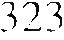

ek, me konusunda
heni i k i nci d i oldukça
kkate aktarına görevine başladı . S i l v i o Manuel beni i k inci dikkatin
eşiğine kadar geti rm i şti. B u duruml arda eks i k l i ğ i m , bana yeterli ve uygun temel lerin veri l m iş olmam asıydı. B i l i nmeyene
güven içinde g i rebi lmeyi göze almas ı i �· i n , kad1 11 savaşç ı l ardan farkl ı olarak , erkek savaşçıl ara ciddi b i rtakım gerekçeleri n gösteri l m e s i gereki r. K adın savaşçılarsa ken d i lerine yol gösteren l i dere tam bir güven d u y m a l arı koş u l u y l a o n lar,
hiçbir tereddüte kapı lmadan ikinc i dikkate girebi l irler.
Don Juan önce rüya g!irmc11i11 karıııaşık yönlerini öğrenerek i şe baş lamam gerektiğini söyleyerek beni Zulcica ' n ın
gözetimine verd i . K usursuz olmalı, öğrend iğim her şeyi büyük bir titizli k l e u ygulam al ı , her şeyden önce de, yaşam gücümü gere k s i z yere h arcamamak i ç i n d ikkat l i ve mantık l ı davranma l ı ym ışım. D i kkat i n ü ç aşamasına g i re b i l m ek ıçııı
k i ş in i n yaşam gücüne sah i p olmas ının b i r önkoşu l ın u ş , zira
278
KARTAL'IN ARMAGANI
yaşam gücünden yoksun savaşçının gidecek yönü ya da
amacı olamazmış. Ölüm sırasında bilincimizin üçüncü dikkate girermiş; ancak ölüm durumuna geçiş, Kartal yaşam gücümüzü parçalayıp yutmadan önce yalnızca bir an sürermiş.
La Gorda, Nagual Juan Matus'un tüm çömezlerine tek
tek rüya görmeyi öğrettiğini söyledi. Çömezlere bu görevi
benimle aynı zamanda verdiğini düşünüyordu. Onların yönergeleri de sağ ve sol olarak ikiye ayrılmış. Normal bilinç
düzlemine ilişkin yönergeler çömezlere N agual ve Genaro
tarafından verilmiş. Çömezlerin hazır olduklarına karar verdikten sonra, Nagual onların yüksek bir bilinç düzeyine geçmelerini sağlayarak, onları muhatap olacakları kişilerle baş
başa bırakmış. Vicente Nestor 'u, Silvio Manuel Benigno 'yu,
Genaro ise Pablito ' yu eğitmiş. Hermelinda Lydia' ya, Nelinda ise Rosa ' ya yön göstermiş. La Gorda ' ysa, Josefina ' yla
birlikte, bir gün yardımıma gelebilmeleri için, rüya g(jrmenin daha incelikli yönlerini öğrenmek üzere Zuleica' nın gözetimine verilmiş.
Bunun yanı sıra, La Gorda, erkeklerin ayrıca, iz siirmeyl
öğrenmek üzere, Florinda 'ya da götürüldükleri sonucuna
varmış. Davranışlarında ortaya ç ıkan büyük değişim bunu
kanıtlıyormuş. Savına göre, daha herhangi bir şey anımsamadan kendisine iz sürmenin ilkeleri öğretilmiş, ancak bu
son derece yüzeysel bir biçimde yapılmış; kendisine öğrendiklerini uygulama fırsatı verilmemiş, oysa erkeklere hem
pratik bilgi hem de görevler verilmiş. Davranışlarındaki de
ğişimler de bunun kanıtıymış. Kaygısız, neşeli birer insan olmuşlar. Yaşamdan haz alıyorlarmış; öte yandan kendisi ve
öteki kadınlar, gördükleri rüyalardan dolayı giderek daha karamsar ve daha ciddi bir ruh haline girmiş ler.
La Gorda, gruptaki adamlardan iz sürme konusunda bildiklerini bana açıklamalarını istediğimde, kendilerine verilen
yönergeleri anımsayamamalarının uygulamada bulunmalarına rağmen aslında ne yaptıklarını bilmediklerinden kaynaklandığını tahmin ediyordu. B ununla birlikte, eğitimleri, öbür
R ÜYA GÖRMENİN İNCELİKLERİ
279
insanlarla olan ilişkilerinde kendini belli ediyordu . Kişileri
kendi arzuları doğrultusunda yönlendirme konusunda kusursuz birer sanatçıydılar. İz siimıe uygulamaları sayesinde erkekler kontrollii ç-ılgınlı,�ı bile öğrenmişlerdi. Örneğin Soledad Pablito 'nun annesiymiş gibi davranıyorlardı. Dışarıdan bakan biri, onların didişen birer ana oğul olduklarını sanabilirdi, oysa gerçekte onlar birer oyuncuydular. Herkesi kendilerine inandırmışlardı. Kimi zaman Pabl ito öyle bir performans sergil iyordu ki, kendisi bile inanıyordu.
La Gorda gruptaki herkesin davranışlarımdan dolayı iyice afalladıklarını itiraf etti. Benim bir kaçık mı yoksa kontrollü ç·ı/g111/ı,�111 bir üstadı mı olduğuma karar veremiyorlarmış. Sergiledikleri oyunlara inandığım ortadaydı. Soledad, onlara benim davranışlarıma aldanmamalarını , zira ben im
gerçek bir deli olduğumu söylemiş. Kontrollüymüş gibi davranıyordum, ancak onların gözünde öylesine anormaldim ki
bir Nagual gibi davranmayı beceremeyeceğimi düşünüyorlardı. Kadınların her birini bana öldürücü bir darbe indirmeleri için görevlendirm iş. Onlara bunu, aklını başımda olduğu bir sırada benim kendisine söylemiş olduğumu belirtmiş.
La Gorda, Zuleica'nın gözetimi altında riiya giirmeyi
öğrenmesinin birkaç yıl sürdüğünü anlattı. Nagual Juan M atus yeterince beceri kazandığından emin olduğunda onu, ger
çek m uhatabı olan Nelinda ' ya götürmüş. La Gorda'ya bu
dünyada nasıl davranması gerektiğini öğreten Nelinda olmuş. Ona yalnızca batılı giysileri içinde rahat hareket etmesini öğretmekle kalmamış, aynı zamanda ince zevkler edinmesini de sağlamış. Böylece, Oaxaca'da bana şaşırtıcı ve çekici gelen şehirli giysileri içindek i rahat davranışlarını daha önceden deneyimlemiş bulunuyormuş.
İkinci dikkate geçişimde Zuleica kı lavuzum ol arak son
derece başarılıydı. Görüşmelerimizin yalnızca gece vakti ve
zifiri karanlıkta gereçekleşrnesi konusunda ısrar etmişti. Bu
yüzden, benim için Zuleica yalnızca karanlıkta bir ses, dikkatimi başka h içbir şey üzerinde değil, yalnızca sözleri üze-
280
KARTAL'IN ARMAGANI
rinde odaklamamı söyleyerek aramızdaki teması başlatan bir
sesti. Sesi, la Gorda'nın rüyada duyduğunu sandığı kadın111
sesiydi.
Zuleica bana, eğer rüya kapalı bir yerde gerçekleşecek se, bunun en i y i yolunun tam bir karanlık içinde dar bir yata
ğa uzanarak, üzerinde oturarak, daha iyisi, tabuta benzer bir
sandığın içinde oturarak yapılması olduğunu söyledi. Dışarıdaysa rüya görmenin bir mağaranın korunaklılığında, su çukurlarının kumluk yamaçlarında ya da dağlık bölgelerde bir kayanın üzerine oturarak yapılabileceğini; ancak asla bir vad ide düz bir zemin üzerinde, ırmakların , göllerin ya da denizin kenarında yap ıl m aması gerektiğini düşünüyordu; zir'ı düz alanlar ve su kenarları, ikinci dikkatin tam karşıtıyımşlar.
Onunla yaptığımız her seans gizemli işaretlerle yüklüydü. İkinci dikkat üzerinde tam bir başarı sağlamanın en emin
yolunun, ayinsel devinimler, monoton ezgiler, karmaşık hareketlermiş çünkü.
Öğretileri rüya görmenin temel ilkeleriyle ilgili değildi.
bunları don Juan bana daha önce öğretmişti. Kendisine gelen
kişiler nasıl rüya görülece,�ini zaten bildiklerini söylüyordu.
Bu nedenle o yalnızca bilincin sol yanının daha özel yanlarıyla uğraşmaktaydı.
Zuleica'nın yönergeleri, bir gün don Juan beni onun evine götürmesiyle başladı. Evine vardığımızda akşamüstü olmuştu. Ev bomboş görünüyordu, ancak biz oraya yaklaştığımızda kapı açıldı. Zoila ya da Marta' n ın ortaya çıkacağını sanıyordum, ancak girişte hiç kimse yoktu. Anlaşılan kapıyı
bize açan her k imse, alelacele ortalıktan kaybolmuştu. Doıı
Juan beni içerideki avluya götürdü ve üzerine minder yerle�t irilerek kanepeye dönüştürülen bir sandığa oturttu. Sandığııı
üzerindeki otuıma yeri yamru yumru, sert bir zemindi ve soıı
derece rahatsızdı. Elimi ince minderin altında gezdirdim ve
sivri uçlu kaya parçaları buldum. Don Juan benim durumu
mun hayli olağandışı olduğunu, zira rüya görmenin incelik-

RLİYA GÖRMENİN İNCELİKLER İ
28 1
!eri n i h ız l a öğrenmem gerekeceğ i n i söyledi . Sert b i r zemin
üzerinde oturmak, beden i m i n olağan bir oturma kon u m u na
k e n d i n i a l ış t ı rm as ı nı ö n l emeye y a rd ı m c ı o l a n b i r a raçm ı ş .
Eve girmeden k ı s a süre önce d o n Juan fark l ı b i r b i l inç düzlem i ne g irmemi sağl am ı ş t ı . Gerek duyduğum s ü rate u l aşab i l m e m için Zu l e i c a ' 11 1 n yönerge leri n i n bana b u b i l in ç düzle
ın i ncle v e r i l m e s i g e re k i y o rın u � . K e nd i m i t a m a me n b ı ra k m a m . içten b i r b i ç imde Zuleica ' y a t am b i r g ü v e n duymam gere k t i ğ i konusu nda beni uyarara k , bana dikkatimi tüm gücümle bakışlarımda yoğunl a�t ı rına ı n ı ve görüş aliı n ı m i ç i nde
b u lu nduğumuz avl uyu en i nce ayrı n t ı l a rı n a kadar be l leğime
kazıınamı emrett i . Tü m ayrı ntıl arla b i rl i kt e , orada ot urduğu
s ı rada h i ssett i k lerinıi ele e k s i k s i z bi�� iıııclc a n ı ms amam gerek i rm i ş . Ard111dan, tam ola rak anl adığımdan emin o l m ak i ç i n
yönergelerini b i r kez d a h a tekrar etti ve d a h a sonra oradan
ayrı ldı .
K ı s a b i r s ü re sonra ort a l ı k i y ice k arard ı . orada öylece
o t u ru p d u rm a k t a n .s i n i rl e r i m boz u l m a y a b a ş l a m ı ş t ı . D a h a
dikkati m i a v l u n u n ayrınt ı l arı üzerinde yoğunLt ) t ı rııı adan arkamda bir h ı ş ı rt ı duydum ve daha sonra Zu leica ' n ı ıı sesiyle
i rk i l d i m . Sert b i r sesle yerimden k a lkarak onu izlemem i fı s ı l clacl ı . Otomatik b i r hareketle söyled i ğ i n i yaptım. Yüzünü görem iyordum: önümde, ik i adım ötemde y ü rü yen kara n l ı k b i r şeki l d i y a l n ı zc a . B e n i , e v i n e n k aran l ı k s a l o n u n d u v a rı ndaki
oyuğa getird i . Gözlerim k a ra n l ı ğ a ;ti ı şm ı ş olmasına rağmen
h i ç b i r şey görem iyordum. J\yağıııı b i r şeye t ak ı l d ı v e o anda
bana oradaki dar bir sandığın içine oturmam ı , s ı rt ı m ı n be l i m e doğru o l a n bölümünü sert b i r yastık olduğuııu tahıııiıı ettiğim bir şeye yasla nı anı ı emretti .
D ah a sonra onun arkama doğru b irkaç ad ı m att ığı n ı hissett i m . Bu beni iy ice �a�ırtııı ı � t ı , z i ra s ı r t ı m l a duvar a rns 1 11claki mesafe n i n y a l 11 1 zc a bq on santim o l d u ğ u n u sanıyord u m .
Yum u � ak b i r s e s l e , d i kkati m i s ö z l e r i üzeri nde odak l a m a m ı
v e sözleri n i n be n i y ö nl e n d i rmes i n e i z i n v e r m e m i e m re tt i .
G ö z l e r i m i açı k t u t m a l ı v e t a nı öıüi nı cl c . göz h i za m d a b i r

282
KARTAL'IN ARMAGANI
nokta üzerinde sabitleştirmeliymişim; bu nokta, aydınlık ve
hoş turuncu-kırmızı bir ışığa dönüşecekmiş zamanla.
Zuleica çok yumuşak, duru bir ses tonuyla konuşuyordu.
Söylediği her sözcüğü duyabiliyordum. Bulunduğum yeri
çevreleyen karanlık, dikkatimi dağıtabilecek tüm dışsal uyarılardan ayırıyordu beni. Zuleica'nın söylediklerini bir boşlu
ğun içinde duyuyordum. Daha sonra salondaki sessizliğin ,
içimdeki sessizlikle uyumlu olduğunu ayrımsadım.
Zuleica, bir rüya görücünün ilk aşamada küçük bir ışıktan yola çıkması gerektiğini açıkladı; yoğun ışık ya da zifiri
karanlık, ilk hamlede bir rüya görücü için yararsızmış. Buna
karşın, mor, açık yeşil ya da koyu sarı gibi renkler, kusursuz
başlama noktalarıymış. Bununla birlikte kendisi, turuncukırmızıyı tercih ediyormuş, zira deneyimleri ona, en kusursuz rahatlama duygusunu bu rengin sağladığını göstermiş.
Bir kez turuncu-kırmızı renge girebilmeyi başarabilirsem, sırasını kaçırmamak kaydıyla, ikinci dikkatimi sürekl i biçimde
toparlayabilirmişim.
Zuleica'nın sesinin benden ne yapmamı istediğinin bedenimle ayırdına v arabilmem, onun sesiyle yaptığımız birkaç seanstan sonra oldu. Yüksek bilinç düzleminde bulunmanın yararı, uyanıklık aşamasından rüya gi5rmc aşamasına geçişi tam olarak izleyebilmemi sağlamasıydı. Olağan koşullar altında bu deneyim oldukça bulanıktır, ancak koşullar sayesinde tek bir seans sonunda ikinci dikkatim denetimi ele geçirdi. B irinci aşama, nefes alabilmede olağanüstü bir zorlanma içinde geçti. Nefes almak ya da vermekte zorlanını yordum; soluğum kesilmemişti- soluklanma ritmim birdenbire değişivermişti. Karın zarım kasılmaya ve bu kasılma sonucu bedenimin orta bölümü daha süratli bir biçimde inip kalkmaya başladı. B unun sonucu, o güne değin yaşadığım en
kısa süreli ve en hızlı soluma oldu. Akciğerlerimin alt kısımlarına doğru nefes alıyordum ve bağırsaklarım üzerinde büyük bir basınç hissediyordum. B aşarısız bir girişimle karııı zarımdaki kasılmaları durdurmaya çalıştım. Her deneyişim-

R ÜYA GÖRMENİN İNCELİKLERİ
283
de daha çok acı duyuyordum.
Zuleica, bedenime gerekeni yapması için fı rsat vermemi
ve onu yönlendirmeye, kontrol etmeye kalkışmarnamı istedi.
Dediği gibi davranmak istiyordum, ancak bunu nasıl yapaca
ğımı bilemiyordum. On on beş dakika süren bu kasılrnalar
ortaya çıktıkları gibi birdenbire kayboldular ve kasılmaların
yerini tuhaf, şaşırtıcı, farklı bir duyum aldı . Bunu önce son
derece garip bir kaşıntı, ne rahatlatıcı ne de rahatsızlık verici
bedensel bir duyum şeklinde ayrımsadım; sinirsel bir ürperti
gibiydi. Giderek öyle yoğunlaştı ki, bedenimin neresinde cereyan ettiğini anlamak üzere dikkatim i onun üzerinde odaklamaya zorladım. Duyumun bedenimin herhangi bir bölgesinde değil, bedenimin dışında cereyan ettiğini, ancak bunu yine de hissettiğimi anlayınca şaşkına döndürn.
Zuleica'nın tam göz hizamda oluşan renk kümesine girmemi emreden sesine kulak vermedim ve dikkatimi tümüyle
bedenimin dışında oluşan bu tuhaf duyumun ne olabileceğinin keşfi üzerinde odakladım. Zuleica nasıl bir zihin durumunda bulunduğumu görmüş olmalıydı; birdenbire bana birinci dikkatin dünyevi bedene ait olması gibi, ikinci dikkatin de saydam bedene ait olduğunu söyledi. Belirttiğine göre ,
ikinci dikkatin kendisini topladığı nokta tam olarak Juan Tuma'nın ilk kez buluştuğumuzda betimlediği noktaydı-bedenin orta bölümünden yaklaşık otuz otuz beş santim yukarıda, mideyle göbek deliği arasında ve on santim sağda.
Zuleica bu bölgeye masaj yapmamı, bir arp ç alıyormuş
gibi iki elimin parmaklarıyla tam o noktaya dokunmam ı emretti. Bu sayede giderek parmaklarımın su gibi katı bir yere
temas edecek, en sonunda kendi saydarn kabuğumu hissedecekmişim.
Parmakl arımı kıpırdattıkça hava giderek katılaştı ve sonunda bir kütlenin ayırdıııa vardım . Tanımlanması olanaksız
bir haz ti.im bedenimi kapl adı. Bedenimde yer alan bir sinire
dokunduğumu sandım ve bunun saçrna bir şey olduğunu dü
şünerek kendimi bir budala gibi hissettim . Parmaklarım ı ha-
2 84
KARTAL'IN ARMAGANI
reket ettirmekten vazgeçtim.
Zuleica, eğer parmaklarımı hareket ettirmezsem başıma
vuracağını söyledi. Parmaklarımla bedenimi sarstıkça, kaşıntının olduğu yere yaklaştığımı h issediyordum. En sonunda
bedenimin on on iki santim ötesine kadar yaklaştı . Sanki
içimde bir şeyler büzülüyordu. Ciddi ciddi bir oyuk hissediyordum neredeyse. Daha sonra başka bir acayip duygu ayrımsadım. Uykuya dalıyordum, ancak kendimdeydim. Kulaklarımda, bana buldozer sesini anımsatan bir uğultu vardı: daha sonra ise bir gücün beni uyandırmadan sol yanıma çevirdiğini duyumsadım. Bir sigaranın sarılışı gibi sıkıca oldu
ğum yerde döndürüldüm ve uyarılma çöküntüsüne geri döndüm. B il incim orada dondu; uyanamıyordum, ancak bilincim kendi içinde öylesine sıkı sarılmıştı ki, uykuya da dalamıyordum.
Zuleica'nın bana etrafıma bakınmamı söyleyen sesini
duydum. Gözlerimi açamıyordum, ancak dokunma duyum
bana sırtüstü bir çukurun içinde uzanmış olduğumu söyüyordu. Kendimi rahat ve emin hissettim. Öylesine dalmıştım ki
bu işe, kalkmayı istemiyordum. Zuleica'nın sesi bana kalkmamı ve gözlerimi açmamı emretti. Yapamıyordum . H areketlerim i istençlememi, ayağa kalkabilmemin artı k adelelerimi kasmakla b ir ilgisinin olmadığını söyledi.
Yavaş hareket ettiğim için bana kızdığını sandım. Ancak
daha sonra aslında tümüyle kendimde olduğumu , belki de
tüm yaşamımda olduğumdan daha bilinçli bir durumda bulunduğumu ayrımsadım. Mantıklı düşünebiliyordum ancak
sanki derin bir uykuda gibiydim. Zuleica' nı n beni bir hipnoza sokmuş olabileceği aklıma geldi. Bu düşünce beni bir an
rahatsız ettiyse de u mursam adım . Kendimi havada asılı, serbestçe yüzüyormuşum duygusuna bıraktım.
Söylediklerinin gerisini duymadım. Ya susmuştu ya da
artık kulaklarımı onun söylediklerine tıkamıştım. Bu cennetten ayrılmayı istemiyordum. H içbir zaman kendimi böylesine huzurlu, böylesine eksiksiz hissetmemiştim. Nefes alışı -
R ÜYA GÖRMENiN İNCELİ KLERİ
285
mın temposunu duyabi liyordum. B i rdenbire uyandım.
Onunla bir sonraki seansımcla, Zulcica, bana kendi saydamlığım içinde tek başıırnı bir oyuk oluşturmayı başardığımı, böyle bir oyuk oluşturmanın, saydam kozamcla ki uzak bir noktanın bedenime yaklaştığı, böylece ele denetime yaklaştığım anlamına geldiğini söyledi. Bana birkaç kez, bedenin bu oyuğu oluşturmayı öğrenmesinden sonra rii_wya girrnek çok daha kolay oluyordu. Garip bir dürtü, beden imin dolaysızca çoğalmayı öğrenmiş olduğuna ilişkin bir duyum
edinmiştim. Bu, kendini rahat ve emin hissetme, uykuda olma, dokunma duyumundan soyutlanmış bir biçimde havada
asılı durma, aynı zamanda da tam olarak uyanık bulunma ve
her şeyin farkında olmanın karı şımı bir duyguydu.
La Gorda, Nagual Juan Matus 'un kendisinde, küçük kız
kardqlerde ve Genarolarda bu oyuğu oluşturabilmek, böylelikle onlara ikinci dikkat üzerinde sürek! i odaklanabilme yetisini kazantlırmak için yıllarca uğraştığını söyledi. Juan M atus 'un ona açıkladığına göre, normal olarak oyuk, gerek duyulduğunda rüya görücü tarafından bir anda yaratı lıyor, daha sonra saydam yumurta ilk şekline geri dönüyormuş. Ancak
çömezlerin duru mu nda, başlarında bir Nagual lider bulunmadığı için, oyuk dışarıdan içeri doğru oluşmuş ve saydam
bedenleri üzerinde sürekli bir özellik olarak kalmış; kimi zaman bu durumun büyük yararlar sağladıgı oluyormuş, ancak
aynı zamanda da önemli bir engel oluşturu yormuş. Tümünü
ele dış uyarılara karşı korunaksız ve değişken tabiatlı yapmış.
Bir kercsincla Lyd i a ' y l a Ros a ' nın s aydam kozalarını
gördı(qiimü ve tekme attığımı anımsadım. Oyuğun onl arın
sağ uyluklarının dış bölümünün üst kısmında yukarılarda bir
yerde bulunduğunu ya da tam olarak kalça kemiklerinin en
üst kısmında bulunduğunu düşünmüştüm. La Gorda' nı n söylediğine göre tam ikinci dikkatlerinin girintisine tekme atmı
şım ve neredeyse onları öldürecekm işim .
La Gorda, kendisinin ve Josefina ' nı n birkaç ay Zuleica ' nın evinde yaşadıklarını söyledi. Nagual Juan Matus bir
286
KARTAL'IN ARMAGANI
gün onları farklı b il inç düzlemine geçirdikten sonra Zuleica 'ya teslim etmiş. Onları, ne yapacaklarını ve neleri beklemeleri gerektiğini söyleden, Zuleica'nın evinin ortasında tek başlarına b ırakmış ve tek bir söz söylemeden çekip gitmiş.
Hava kararıncaya kadar orada oturmuşlar. Daha sonra Zuleica onların yanına gelmiş. Yüzünü asla görmemişler, yalnızca sesini duymuşlar. Zuleica onlarla sanki duvarın üzerinde bir noktadan konuşuyormuş.
Zuleica idareyi ele alır almaz son derece buyurganlaşmış. Onlardan derhal soyunmalarını istemiş ve yerde duran
yumuşak tüylü, pançoya benzeyen giysilerin içine girerek
sürünmelerini emretmiş. Giysiler bedenlerini tepeden tırnağa
kaplamış. Zuleica daha sonra onlara, duvarın içindeki, benim
de girip oturduğum oyuğa girerek sırt sırta oturmalarını emretmi ş . La Garda kend ilerine verilen görevin, gözlerinin
önünde renkler beliri nceye değin sürekli olarak karanl ığa
bakmak olduğunu belirtiyordu. B ir çok seansın ardından,
gerçekten de karanlığın içinde renkler görmeye başlamışlar,
bundan sonra Zuleica onları yan yana oturtmuş ve bakışlarını aynı nokta üzerinde odaklamalarını söylemiş.
La Garda Josefina'nın çok çabuk öğrendiğini ve bir gece hışırtılı bir sesle pançonun içinden sıyrılıp turuncu-kırmızı renk kümesinin içine dalıverdiğini söyledi. La Gorda' nın tahminine göre ya Josefina o renk lekesine doğru uzanmış,
yahut da o renk lekesi gelip onu bulmuş. Sonuç olarak, Josefina bir an içinde pançonun içinden çıkıp gitmiş. O günden
sonra Josefina onların yanından ayrılmış ve la Gorda öğrenimini tek başına, yavaş yavaş sürdürmüş .
La Gorda' nın öyküsünü dinlerken Zuleica'nın beni de
tüylü bir giysinin içinde süründürdüğünü anımsadım. Ger
çekten, bana giysinin içinde sürünmemi emrederken vermiş
olduğu komutlar, bu emrin altında yatan nedeni de anlamamı
sağlıyordu. Zuleica bana kumaşın yumuşaklığını çıplak tenimle, özellikle de baldırlarımın derisiyle hissetmemi istemiş, defalarca, insanların baldırlarının dış bölümünde otağa-
RÜYA GÖRMENİN İNCELİKLERİ
287
nüstü bir algı merkezi nin bulunduğunu, beden inin bu bölümündek i der i n i n gevşediği y a el a y u m u ş ad ı ğı c\ ur u nı l arcla,
duyumsayabi lme yet i mizin akl ın alamayacağı ölçüde gel i şeb ileceğini söylemişti. Yumuşak, sıcak bir giysiydi ve bacakl arımda olağanüstü bir haz duyumu uyandırıyordu. B a l c\ ı rlarımclaki s i n i r merkezleri son derece u yarı l m ıştı .
La Gorc\a ela aynı beden sel hazzı duyumsam ı ş . Hatta,
daha ela i leri giderek, turu ncu-kı rmızı reıı k kümesine u l aşmasmda onu yönlendiren şeyin o paııçoııun erk i olduğunu
düşünmeye başl am ı ş . B u gi ysi le relen öylesi ne etki lenm i ş k i
kendi s i i ç i n bir tane d i k m i ş . G iysinin aynı sın ı yapmış: yarattığı etk i n i n aynı olmamasına rağmen d iktiği g i y s i onda bir
avunç ve dinginlik yara tm ı ş . Söylecliğ iııe göre , o ve Josefina
en sonunda tüm boş zamanl arı n ı la Gorda ' nı n her i k i s i için
dikmiş olduğu pançoların içi nde geç iırneğe başl aırnşlar.
Lyd i a ve Rosa da girm işler o elbiselerin iç ine ama onlar
pek hoşla nma mış. Benim gibi.
La Gorda, Josefi n a ' nı n ve kendis i n i n giysil ere o l an bağl ı l ığını g iys ilerin iç inde oldukları sırada riiwı re11/..:lcrini bulmaya yönlendi rilmiş olmalarına bağl ı yordu. Benim bu giysilere olan i l g isizl iğim inse, bu renkli bölge n in içine g i rın e y i
ş imclendi o n a göre-renk kümesi bana gelm i şti. H a k l ı y d ı ela.
B enim d urum umda Zuleica ' nı n ses i nin d ı ş ın d a hazırlık aşamasın ı yönlendiren bir şey daha v ardı . H iç şüphesiz, Zuleica
beni yönlendi rirken, la Gorc\ a ' y 1 a Josefi n a ' y ı yön lendi rcli
ğ inde uygulamış olduğu aşamaları ayneıı uygulaııı ıştı. B i rbirini izleyen birçok seans sırasında gözler i m i karan lığa odaklamış ve renk lenmeyi görmeye hazırlanmıştım. Gerçekte, z i fir i karan l ıktan, hatları t a m bir kes i n l ik içinde bel i re n renk lekelerine doğru dönüşüme başından sonuna eleğin tanı k o lab i l m i şt i m , daha sonraysa bedenim d ikkat i m i çeken b i r kaş ı n t ı tarafından dalgal anm ış ve dingin 11wırııklık aşamas ı n a gir
ıiı iştim. Turu ncu-kırm ı zı rengin iç i ne ilk kez o an c\ala b i l m i ş tiın .
Uykuyla uyanık l ı k arasında kalmayı öğre n nıemc\cn son-

288
KARTAL'IN ARMAGANI
ra, Zuleica temposunu yavaşlattı. Beni bu durumdan çıkartmak için acele etmediğine bile inanmaya başlamıştım. H i�·
karışmadan bu durumda kalmama izin veriyor, bana herhangi bir soru sonn uyordu; belki ele ağzını soru sormak için de
ğil, yalnızca emir vermek için açıyordu. Onunla gerçek anlamda hiçbir zaman konuşmamıştık, en azından don Juan ' la
konuştuğum biçimde.
Dingin u yanıklık aşamasında bulunduğum s ırada bir
kez, bu konumda kalmanın benim için yararlı olmayacağını .
zira ne denli haz verici olursa olsun, bel irgin birtakım sınırlamalarının bulunduğunun ayırdına vardım. O anda bedenimde bir titreme hissettim ve gözlerimi açtım, daha doğrusu, gözlerim kendiliklerinden açı lıverdiler. Zuleica bana bakıyordu . Bir an aklım karıştı. Uyandığımı sandım; karşımcLı Zuleica ' y ı bu şekilde görmeyi doğru s u beklemiyordu m .
Onun yalnızca sesini duymaya alışırnştım. Artık gece olmadığını ayrımsamak da beni şaşırtm ıştı . Çevreme bakın dım.
Zuleica'nın evinde değildik. Daha sonra, rüvada olduğunı uıı
farkına vardım ve uyandım.
Zul e ica daha sonra yönergelerinin yeni bir aşamasını
başlattı . yönergelerine, b il incimi bedenimin orta bölü n1 li
üzerinde oclaklamamı emrederek başladı. Benim durumumd:ı
bedenin orta bölümü, göbek deliğimin alt ucunun aşağısın daydı. B enden, bedenimin bu bölümüyle yeri süpürmem i,
göbeğimin üzerine bir süpürge bağlıymış da, onunla yeri süpürüyormuşum gibi yerde salınmamı istedi. Sayısız seanslar
boyunca, Zuleica' nın sesinin benden yapımımı istediği şeyı
başarmaya çalıştım. Benim dingin 11ya111klık aşamasına girmeme izin v ermiyordu. Amac ı , uyanık durumda kalmayı
sürdürerek, bedenimin orta bölümüyle yeri süpürüyor olnı;ı
duyumunu ayrımsamamda bana yol göstermekti. BeliıttiğinL·
göre sol yan bilincinde olmam bu alqtırmayı başarıyla ger
çekleştirmem için bana yeterli avantajı sağlayacaktı .
B ir gün, durup dururken, midemin bulunduğu bölge(k
hafif bir duygu hissetmeyi başardım. Bu, tanımlanabi lir h ı ı
RÜYA GÖRMENİN İ NCELİKLERİ
289
duygu değ i ld i; dikkat i m i bu d u y g u n u n üzerinde oclakl adı
ğ ı m d a , k arı n boş l uğ u m da , t am m id e m i n i ç i n d e değil ele ,
onun tam üzeri nde b i r karı ncalanma duygusu olduğunu ayrımsadım. İncelememi clerin lqtircl i kçe ayrı ntıları da duyumsadım. Başlarda h issettiğim bel i rs izlik yeri n i giderek kes i n l i
ğ e bıraktı . Karın boşl uğumla sağ bald ı rı m ara s ındaki bölgede gerilıneyle karı ncalanma karı ş ı m ı tuhaf bir duyumun ayırclına vardım.
Duyum keskinleşi nce , i s tençclışı b i r h areketle sağ uylu
ğurnu göğs ü me yaklaştırdım. Böy lece, bu i k i nokta bedenim i n elverdiği ölçüde birbirine yaklaşm ıştı. S in i rlerim olağanüstü uyarı lmıştı, b i r an ürperd i m ve o anda bede n i m i n orta bölümüyle yeri süpürüyor olduğumun ayırd ı na vard ı m ; bu,
oturma konumunda beden i m i her sal layışımda deneyim leycbildiğim dokunsal bir duyumdu.
Bir sonraki seansta, Zu leica dingin 11va111k/ık clunımuna
geçmeme izin verel i . A ncak bu kez duyuın s acl ıkları ın daha
önce dcney i m l cd ikleriıne benzem iyord u . S a n k i i ç i m de bu
duru mun daha önce verdiği h azzı özgürce deney i m lcmemi
engel leyen bir tür denetim mekan izması ol uşmuş tu-bu duru m a geç i nceye ele ğ i n geç i rd i ğ i m a ş a m a l a r ü z e r i n d e de
odak l amarnı sağlayan b i r denet imdi bu. Önceleri ikinci dikkatin yer aldığı noktadak i kaşıntıyı bu defa saydam kozamın
içinde duyumsadım. Parm ak larım ı arp çalı yormuş gibi k ı p ı rdatarak bu nokta üzerinde masaj yapt ı m ve nokta m idem i n
olduğu bölgeye doğru içeri göçtü . O n u neredeyse c i l d i m i n
lizerin clc h i s sedeb i l i yordum. S a ğ bal d ı rı m ı n d ı ş ın d a b i r karı ncal anma deneyimledim. H azla a c ı n ı n karı ş ı m ı bir duyumdu bu. Duyum önce tüm bacağı m a , daha sonra ela s ı rt ı m ın alt k ı sınıııa doğru yay ı l d ı . Kalçal arı m ı n t itredi ğ i n i duyum sadı m .
T ü m bede n i m i s i n i rl i b i r t i treme sarm ı ş t ı . Beden i m i n baş
aşağı bir ağa yakal andığını sand ı m . A l n ı m ve ayak parmakl ar ım ağa dok u n u yordu san k i . Daha sonra kend i m i , i k i y e
katlanarak bir ç arşafa sarı l ı yormu� gihi h issett i m . Çar�afı ben imle birlikte, merkezde kenel i ıç i nde s armalayan güç , s i n ir-

290
KARTAL'IN ARMAGANl
sel kasılmalarımdı. Sarmalama sona erdiğinde, artık kend i
bedenimi ayrımsayamıyordum. B içimsiz bir bilinç , kend i
içinde sarmalanmış sinirsel bir kasılmadan başka bir şey de
ğildim. Bu bilinç, bir çukurun içinde, kendi girintisi içinde
dinginleşti.
O zaman, rüya sırasında olup bitenleri anlatabilmenin
olanaksızlığını kavradım. Zuleica, sağ ve sol bilincin birbirleriyle iç içe geçtiklerini belirtmişti. Her ikisi de, ikinci dikkatin girintili merkezini oluşturan bir oyuğun içinde tek bir küme halinde devinimlerini sona erdiriyorlardı. Rüyaya girebilmesi için kişinin hem saydam bedenini hem de normal bedenini kullanması gerekiyordu. Önce, ikinci dikkatin merkezine bir başkası tarafından dışardan itilerek ya da rüya göriicü tarafından içeriden emilmek suretiyle ulaşılması gereki yordu. İkinci olarak, birinci dikkatı ayırmak üzere, bedeniıı orta bölgesinde konumlanan cismani beden ve baldırların .
özellikle de sağ baldırın uyarı lması ve temas edecekleri noktaya ulaşıncaya değin birbirlerine yaklaştırılmaları gerekiyordu. O anda kişi kendini bohçalanmış gibi hissediyor, ikinci dikkat otomatik olarak benliği eline geçiriyordu.
Zulcica'nın emirler yoluyla yaptığı açıklamalar, olanları
anlatabilmenin en inandırıcı yoluydu, zira rüya görme sırasında yaşanan duyumsal deneyimler beynimizde depoladığımız normal deneyi mlere benzemiyordu. B unların tümü ek beni şaşkına çeviriyordu. B ir kaşıntı duyumu, bedenimin dı
şında cereyan eden bir karıncalanma, belirli bir alanda odak
!aşıyordu ve böylece, duyumu hissettiği an bedenimin duyduğu kargaşa en alt düzeye iniyordu . Öte yandan, kendı
içi mde sarmalanmam, o güne değin yaşadığı m en rahats ı;
edici duyguydu benim için. Bedenimi bir şok durumuna sokan çeşitli duyumlar içeriyordu. Bir noktada, ayak parmaklarımın alnıma değdiğinden emindim ama böyle bir konrnm
asla gelemezdim. Armut biçiminde tepeden aşağı doğru sar
kan bir ağın içinde bulunduğumdan da hiç şüphem yoktu .
Normaldeyse, yerde oturuyordum v e uyluklarımı göğsürnL·
RÜYA GÖR/v!ENiN İNCELİKLERİ
29 1
yaslaırn�tıın .
Zu leica ayrı ca, b i r s i ga ra g i b i sarılara k i k i nc i d i k k a t i n
ç u ku ru nu n içinde yerleşti r i l m i ş o l m a d u ygusunun, .�o l ve sağ
b i l i nc i n birleşerek başat l ı k düzeni n i n değişmesi ve üstünlü
ğün sol bil ince aktarı l ması sonucu oluştuğunu bel irtti. Ben i ,
i k i d i kkat düzl em i n i n yeni den normal k onum l arı na geri döndükleri v e sağ b i l incin dizginleri e l ine geç i rd i ğ i ters i ne dönüş sürecine d ikkat etmem konusunda d a uyardı .
B u süreç s ı rasın d a oluşan du yguları a s l a ayrı msayam ı yordum ancak u yarı s ı bende öyle b i r saplantı oluşt u rı n u ş t u
k i , olup b i ten h e r ş e y i inceleyeb i l me çabal arım i ç i nde ö l d ü r ü c ü b i r boc a laman ı n i ç i nde tutsak k a l d ı m . Zu l e ica b a n a t i tizlenıneleriınc bir son vermemi. yapacak başka işlerimin de b ulunduğunu emrederek uyarı s ın ı geri almak zoru nda k a ld ı .
Zuleiea, lıcr şeyden önce istençl i h areketler üzerindeki
denetimimi kusursuzlaştırmam gerek t i ğ i n i be l i rtti . Yönergelerine, dingin ııyanık/ık duru mundayken zaman zaman gözler i m i açmam konusunda bana yol göstererek başladı . B u n u gerçekl q t ireb i lmem büyük b i r ç abayı gere k t i riyordu. B i r keres i nde gözlerim b i rden b i re aç ı l d ı ve Z u e i c a ' y ı , k a r ş ı m d a
tehd it e d i c i b i r tavı rla üzerime doğru eğ i l i rken görd ü m . Yerde uzanm ı ş t ı m a n c a k n e rede o l d u ğ u m u an l ay a m am ı ş t ı m .
I ş ı k , g ü ç l ü b i r e l ek t r i k ampu l ü n ü n a l t ı ndaym ı ş ı m g i b i son
derece p arl ak tı ancak bu p:ırla k l ı k gözlerim i kaınaştı rınıyordu. Zule ica ' y ı rahatça görebi l i yordum.
Hareket i m i istençleyerek ayağa kalkmamı e m re tt i . Beden imin oruı bölü m ü n ü k u l l anarak kend i m i yuk arı doğru it
ıneııı gerek t i ğ i n i , t ü nı beden i m i yuk a rı doğru ka ldı rınak iç in
b i rer kol luk ckğneği gibi kul lana bileceğim ü�· ka l ı n doku nac ı m ı ıı bu l unduğumı söy l e d i .
K a l ka b i l mek i ç i n a k l a geleb ilecek her yolu dene d i m , a n c a k başaramadı m . Çocuk ken yaşad ı ğ ı m v e b i r t ü r l ü u yanamayı başarama d ı ğ ı nı , oysa tam a n l a m ı y l a kend imde o l d u
ğ u m v e u m u t s uzca r; ı ğ l ı k atmaya � a l ı ş t ı ğ ı m k a rabas a n l a rı
anı msatan b i r um;ı r.s ı zl ı k ve bedensel b i r ac ı d u yd u m .

292
KARTAL'IN ARMAGANI
En sonunda Zuleica benimle konuştu. Belli bir düzeni
izlemem gerektiğini, gündelik yaşamdaki gibi kendimi yormanın ve sinirlenmenin gücümü boşuna harcamaktan öte bir
sonuç vermeyeceğini ve bütün bütüne budalalıktan başka bir
şey olmadığını söyledi. İnsanın kendi kendini yorması ancak
birinci dikkat durumuna göreymiş; oysa, ikinci dikkat dinginliğin ta kendisiymiş. Benden, bedenimin orta bölümüyle
yerleri süpürdüğüm sırada deneyimlediğim duyumu yinelememi istedi. Bunu yineleyebilmem için oturuyor olmam gerektiğini düşündüm. Üzerinde fazla kafa yormadan dik bir biçimde yere oturdum ve bedenimin ilk kez bu duyumu ayrımsadığı konuma girdim. İçimde bir şeyler sallandı ve birdenbire kendimi ayakta buldum. H areket etmek için ne yapmış olabileceğimi tahmin edemiyordum. Her şeyi en başından itibaren yineleyecek olursam bu düzeni yakalayabilece
ğimi düşündüm. Bu düşünce zihnimden geçtiği an kendimi
yeniden yerde uzanır buldum. B ir kez daha ayağa kalktığımda, aslında herhangi bir yöntemin bulunmadığını, hareket
edebilmem için, hareket etmeyi içten amaçlamam gerektiğini
anladım. Diğer bir deyişle, hareket etmeyi istediğime kesinl ikle inamış olmam gerekiyordu, daha doğrusu, hareket etmem gerektiğine kendimi inandırmış olmam gerekiyordu.
Bir kez bu ilkeyi kavradıktan sonra, Zuleica iradeye dayalı hareketlerin akla gelebilecek her yönüyle ilgili haraketleri uygulamamı sağladı. Uygulamalarını arttıkça, rüya görmenin aslında ussal bir durum olduğu gerçeği benim için giderek açıklık kazanıyordu. Zuleica bunu bana açıkladı. Söylediğine göre rüya sırasında sağ yan, ussal bilinç, rüya görücüye bir kendindelik ve ussallık duyumu kazandırmak üzere sol yan bilincinin içine girer; ancak ussallığın etkisinin en alt
düzeyde kalması ve yalnızca rüya görücüyü aşırılıklardan ve
tuhaf girişimlerden korumak üzere denetleyici bir mekanizma işlcvıiı' görmesi gerekmektedir.
Bıuı · 1 , n sonraki aşama, rüya gören bedenime yönlendirmeyı c
rnle ilgiliydi. Zuleic a ' yk ilk karşılaşmamda
. . .
RÜYA GÖRMENİN İNCELİ KLERİ
293
don Juan, beni bir sandığın üzerine oturtmuş ve avluyu dikkatli bir biçimde incelerni söylem işti. Dinsel bir görevi yerine getirircesine, kimi zaman saatlerce avluyu seyretmiştim.
Zuleica'nın evinde her zaman tek başımaydım. Öyle görünüyordu ki, oraya gittiğim günler, herkes ya gitmiş oluyordu ya
da gizleniyorlardı. Sessizlik içinde ve tek başıma olmak bana
iyi geliyordu, o avluyla ilgil i ti.im ayrıntıları ezberlemeyi ba
şarabildim.
Böylece Zuleica bana, dingin uyanıklık durumunda gözlerimi açabilme görevini göstermiş oldu. B unu başarabilmek
için bir çok kereler uğraştım. Önceleri gözlerimi açtığımda
karşımda onu görüyordum ve o, bedeninin bir sarsıntısı ile
beni tıpkı bir top gibi dingin uyanıklık aşamasına doğru geris ingeriye yuvarl ıyordu . Bu yuvarlanmaların b irinde yoğun
bir sarsıntı hissettim; ayaklarımın altında yer alan bir şey yukarılara, göğsüme doğru tırmandı ve öksürerek onu dışarı çıkardım; gece vakti avl unun görüntüsü birdenbire bedenimden dışarı doğru fırladı. Çıkan ses, bir hayvaııın kükremesine benziyordu.
Hafif bir mırı ltı halinde Zulcica' nın sesini cluycluın. Ne
söylediğin i duyam ı yordum. S andığın üzerinde oturduğumu
hayal meyal hissettim. Ayağa kalkmak istedim ancak somut
bir bedenimin olmadığını ayrımsadım. S anki bir rüzgar beni
uzaklara doğru uçuruyordu. Daha sonra, bana hareket etmememi söyleyen Zuleica' nı n sesini duydum. Devinimsiz bir
şekilde orada durmaya çalıştım ancak bir güç beni kendine
doğru çekti ve salondaki oyuğun içinde kendime gelelim. S ilvio Manuel bana bakıyordu.
Zuleica'nın evindeki her rüya görme seansından sonra
don Juan ' ı zifiri karanlık salonda beni bekliyor bulurdum.
Beni evden dışarı çıkarır ve farkl ı bilinç düzlemine geçmemi
sağlardı. Bu kez orada Silvio Manuel duruyordu. Tek bir söz
söylemeden beni deri kasnakların içine oturttu ve çatı kirhlerinin üzerine doğru havalandırdı. Ertesi gün öğlen oluncaya kadar orada asılı kaldım. Daha sonra don Juan gelerek be-
294
KARTAL'IN ARMAGANI
ni aşağı indirdi. B ana, yere dokunmadan belirli bir süre havada asılı kalmanın bedenin çevresine uyum sağlamasına
yardımcı olduğunu, özellikle de benim başlamak üzere oldu
ğum türde tehlikeli bir yolculuğa çıkmadan önce bu süreciıı
son derece gerekl i olduğunu söyledi.
En sonunda gözlerimi açıp Zuleica'yı ya da karanlık avluyu görmeyi öğrenebilmem için birçok rüya görme seansı
daha geçirmem gerekti. Ancak bunlardan sonra Zuleica 'nııı
da en b aştan beri rüyada olduğunu anl ayabildim . Zuleica.
salondaki o oyukta benimle hiçbir zaman birlikte olmamıştı .
İlk gece sırtımın duvara dayalı olduğunu sandığımda aslında
yanılmıyordum . Zuleica yalnızca rüyadan gelen bir sesti.
Rüya seanslarının birinde, amaçlı olarak Zuleica 'yı görmek üzere gözlerimi açtığımda, onunla birlikte la Gorda' yla
Josefina'nın da eğilerek bana baktıklarını gördüğümde deh
şete düşmüştüm. O gün yönergelerinin en son aşaması başliı
mıştı. Zuleica üçümüze kendisiyle birlikte yolculuk etmeyi
öğretti. B irinci dikkatimizin kökenlerinin bu dünyaya bağ! ı
olduğunu, buna karşın ikinci dikkatimizin kökenlerinin evrene bağlı olduğunu söylemişti. Bununla belirtmek istediği, tanım gereği bir rüya görücünün gündelik yaşamın kaygılarının dışında bulunduğuydu. B u durumda, rüya içinde bir yolcu olarak Zuleica'nın la Garda, Josefina ve bana kaqı soıı görevi, bilinmeyene doğru yolculuklarında onu izlemek üzere ikinci dikkatlerimizi yönlendirmekti.
B irbirini izleyen seanslarda Zuİeica'nın sesi bana keneli
"saplantısının" bir buluşmaya doğru bana yol göstereceğini ,
ikinci dikkatin söz konusu olduğu durumlarda riiya göriiciin iin saplantısı nın bir kılavuz işlevini gördüğünü ve onuıı
saplantısının bu dünyanın ötesinde gerçek bir yer üzerinde
odaklandığını söylü yordu. Oradan beni çağıracaktı ve ben
onun sesini o yöne doğru gitmek için bir hat olarak kullanacaktım.
İki seans hiçbir şey olmadı; Zuleica' nm sesi giderek zayıflıyordu ve onu artık izlemeye beceremediğimi düşünerek
RÜYA GÖRMENİN İNCELİ KLERİ
295
endişelenmeye başlamıştım. Bana ne yapmanı gerektiğini
söylememişti. Üstelik üzerime olağanüstü bir ağırlık çökmüştü. Beni dingin 11ya11ıklık durumunun dışın a çıkmaktan
alıkoyan bağlayıcı bir güç vardı ve onu bir türlü kopartamıyordum.
Üçüncü seansta, gözlerim kendi kendine açılıverdi. Zuleica, la Gorda ve Josefina bana bakıyorlardı. Onlarla birlikte ayakta duruyordum. Daha önce hiç görmediğim bir yerde olduğumuzun ayırdına vardım hemen. Bu yerin en belirgin
özell iği, son derece parlak, dolaysız bir ışığın varlığıydı. Etraf, neonu a n d ı ran beyaz, g ü ç l ü b i r q ığ a b o ğ u l m u ş t u .
Zuleica, b i z i etrafa bakınmaya çağırır g ibi gülümsüyordu. La
Gorda'yla Josefina da, tıpkı benim gibi ihtiyatlı davranıyorlar, bana ve Zuleica 'ya ürkek gözlerle bakıyorlardı . Zuleica,
hareket etmemiz için bize i şaret etti. Açık havadaydık ve
parlak bir dairenin ortasında ayakta d ur uyorduk. Zem in,
kaya gibi sert görünüyordu, yukarıdan gelen kör edici beyaz
ışığın büyük bir bölümünü yansıtıyordu. Tuhaf olan, ışığın
gözlerim için çok yoğun olduğunu bilmeme rağmen, yukarı
bakıp ışığın kaynağını keşfettiğimde gözlerim hiç de yanmamıştı. Güneş ışığıydı. Doğrudan doğruya güneşe bakıyordum ancak, rüyada olduğum için olsa gerek, bana yoğun bir beyazlık gibi görünüyordu.
L a G o rd a ' y l a J o s c f i n a da g ü n e ş e b a k ı y o r l a rd ı v e
görünürde onların da gözleri yanmamıştı. B irden bire korkmaya başladım. Işık bana yabancıydı. Acımasız bir ışıktı bu;
bize saldırıyormuş gibi görünüyor, bir rüzgar yaratı yordu.
B u n u n l a b ir l ikte , herhangi bir sıcaklık hi ssetmiyord u m .
I ş ı ğ ı n k ö t ü n i ye t l i o l du ğ u n a i n an ı y o rd u m . L a G o rd a ,
Josefina ve ben b irlikte, ürkmüş çocuklar gibi Zuleica' nın
çevresinde toplandık. B ize sarıldı, daha sonra o beyaz, parlak ışık giderek sönmeye başladı ve tümüyle kayboldu. Onun
yerini yumuşak, son derece dinlendirici sarımsı bir ışık aldı.
O an bizlerin bu dünyada olmadığımızın aytrdına vardım. Zemin ıslak, p işmiş toprak rengindeydi. Görünürde hiç
296
KARTAL'IN ARMAGANI
dağ yoktu, ancak bulunduğumuz bölge tam olarak düzlük de
sayılmazdı. Toprak kavrulmuş, yer yer ç atlamıştı. Pişmiş
toprak katı , engebeli bir denize benziyordu . Çevremde
nereye baksam , bir okyanusun ortasındaymışım gibi, aynı
görüntüyle karşılaşıyordum. Yukarı baktım; gökyüzü, çıldırtıcı parlaklığını y itirmişti. K ararmıştı, ancak mavi değildi .
Ufukta, yakınlarda parlak b i r yıldız görünüyordu. İşte o an,
i k i güneşe, i k i y ı ldıza sahip b i r dünyada bulunduğumuz
düşüncesi uyandı zihnimde. Güneşlerden biri çok büyüktü
ve ufuk çizgisini aşmıştı, diğeriyse daha ufaktı ve olasılıkLı
da daha uzaktaydı.
Sorul ar sormak çevreyi dolaşmak ve araştırmalar yapmak istiyordum . Zuleica bize rahatlamamızı ve sabırla beklememizi işaret etti. A ncak, sanki bir şeyler bizi çekiyor gibiydi. B irdenbire la Garda ve Josefina gözden kayboldular.
ve uyandım.
O günden sonra bir daha hiç Zuleic a ' nın ev ine g i t medim. Don Juan ya kendi evinde ya d a nerede bulunuyorsak orada farklı bilinç düzlemine geçmemi sağlıyor, böylece rüyaya g iriyordum. Zuleica, la Gorda ve Josefin a ' y ı hep
beni bekler buluyordum. Aynı dünya ötesi manzaraya, artık
orayı iyice tanıyıncaya kadar defalarca geri döndük. Mümkün oldukça, ışığın parlak olduğu zamanı, gündüz vaktini es
geçiyor ve oraya geceleyin, ufukta devasa gök cisminin yü1'selişini izleyecebileceğimiz bir zamanda ulaşıyorduk : öylesine görkemliydi ki, ufkun pürüzlü çizgisi üzerinde patladığında, önümüzde uzanan yüz seksen derecelik açının eıı azından yarısını kaplıyordu. Bu cisim öylesine güzel, ufukt;ı
y ük seli ş iy se öylesine nefes kesiciydi ki, salt o görüntüyii
seyredebilmek için orada sonsuza değin kalabilirdim.
G ö k t e k i o c i s i m , t a m tepeye u l aş t ı ğ ı nd a ayd ı n l ı � ı
neredeyse tüm gökkubbeyi kaplıyordu. Onu seyredebilmd
için her zaman yere uzanırdık . Belli birtakım bölümleri varrl ı
ve Zuleica bize bunları tanımayı öğretmişti. Onun bir yıld ı ı
olmadığını fark etmiştim. Işığı bir yansımaydı; kütlesi n i ı ı
R ÜYA GÖRMENİN İNCELİKLERİ
297
s a y d a m o l m a d ı ğ ı n ı d ü � ü n ü y o rd u m . z i ra y a n s ı t t ı ğ ı ı � ı k ,
devasa boyutları n a oranl.a, hayli y u nrn � a k t ı . Ç iğdem s arıs ı
yüzeyi üzerinde h i ç deği �ıneyen i r i , kahverengi noktalar v ardı.
Z u l c i c a b i zi düze n l i o l arak sözc ü k lerle bet iml e n m e s i
o l anaksız yol c u l u k l ara ç ı k ard ı . La CJ orda ' n ı n söyled i ğ i n e
göre, Zu leica Josefi n a ' yı b i l i nmeye n i n daha el a uzak v e derin
bölgelerine götü rüyordu; z i ra Josefi n a da Zulcica gibi olduk
ça ç ı l gındı; i k i s inde de b i r rii va gi5riiciivc kendi nde o l m a
n i t e l i ğ i n i s a ğ l a y a n u s s a l l ı ğ ın z e rre s i b u l u n m u y ordu-bu
nedenle de, herhangi bir �ey i ç i n ussal nedenler ya da açıklamalar aramak gibi bir dert leri de yoktu.
Z u l e i c a ' n ı n y o l c u l u k l a r h a k k ı n d a b a n a a n l a t t ı k l a rı
a r a s ı n d a b i r a ç ı k 1 a m a y a b e n z e y e n t e k k o n u rii v o
,
gi5riicii/erin erk l e r i n i i k i n c i d i k k a t l e r i üzeri nck o d a k l a n malarının, onları can l ı birer sapana dön ü�türdüğüydü. Rii.vo
görücüler güç lend ikçe ve kus urs uzl a � t ı k ç a , i k i n c i d i kkatlerini b i l i nmeyen iç inde daha uzaklara doğru fırlatabil iyorlar
ve rüyalarını uzatabi l iyorlarını � .
D o n J u a n b a n a , Z u l e ic a ' y l a y a p t ı ğ ı m y o l c u l u k l a rı n
yanı l s ama o l m ad ı ğ ı n ı , y apt ı ğ ı m h e r �ey i n i k i n c i d i kk a t i n
denet i m i yönü nde i leriye doğru a t ı l a n b i r a d ı nı o l d u ğ u n u
s ö y l e d i ; d i ğ e r b i r d e y i � l e , Z u l e i c a b a n a ö t e k i fı l c m i öğret iyordu. B ununla b irl i kte bana bu yol c u l ukları n mahiyet i n i açıklayamadı. Ya da bel k i de, b u konuyu henüz açı k l am ak
i s tem iyord u . B an a , i k i n c i d i k k a t i n y a p ı s ın ı , b i r i n c i d i kk at
terimleriyle aç ıkl amaya ç a l ı�acak o l ursa, sözcüklerin içi nde
u marsızca t u tsak o l acağın ı söyled i . B e nd e n k e n d i s o n u ç l ar ım ı kendim ç ı k artma l ı y m ı � ı m ; bense bu konu üzerinde
daha derin dü�ündükçe, onun isteks i z l i ğ i n i n i � levsel nedenl erden kaynak landığından daha da e m i n oldum.
İ k i n c i d i k k a t ü z e r i n d e k i y ö n e rg e l e r s ı r a s ı n d a ,
Zul e i ca ' n ı n k ı l av uzl uğu nda, mantı ğ ı m ı n ötes inde, ancak hiç
�üphesiz, b i r bütün olara k b i l i n c i m i n kapsaını iç inde yer alan
g izemlere doğru gerçek yolculuklar yapt ım. K avranamayan
298
KARTAL'IN ARMAGANI
bir şeye doğru yolculuk yapmasını öğrendim ve sonuçt;ı ,
Emilito ve Juan Turna gibi, kendi sonsuzluk öykülerime var
dım

FLOR I NDA
Z uleica'nın
mesiyle, bize rüya
kuralın bir gör
yol menin karmaşık
gösterici olarak yönlerini öğr
yadsınamaz etger
çekliğini kabullenmiş; içimizde gizli bir bilinç bulunduğu,
bu bilince ulaşabilmenin olanaklı olduğu üzerinde de tam bir
fikir birliğine varmıştık. Don Juan, kuralın gerektirdiklerini
yerine getirmişti.
Kuralın buyruklarına göre, don Juan beni şimdi savaşçı
topluluğunun o güne değin karşılaşmadığım tek üyesi olan
Florinda ' yl a tanıştı rac aktı. Don J u a n bana, Florin d a ' n ı n
evine tek başıma gitmem gerektiğini, Florinda' y l a aramda
geçenlerin diğerlerin i h iç ilgilendi rmeyeceğini söyled i .
Florinda, bana b i r N agualmışım gibi kılavuzluk edecekmiş.
Don Juan 'ın kendisi de, velinimetinin Florinda ' y a birçok
yönden benzeyen savaşçı üyesiyle bu tür bir etkileşimde
bulunmuş.
Don Juan bir gün beni Nelinda ' nın evinin k apısı nın
önünde bırakarak, içeri girmemi , Florinda ' nı n beni o rada
300
KARTAL'TN ARMAGANI
beklediğini söyledi.
"Sizinle tanışmak benim için bir şeref," dedim beni evin
girişinde karşılayan kadına.
"Adım Florinda," dedi.
Sessizlik içinde birbirimize baktık. Sanki dilim tutul
muştu. B ilinc im her zamankinden açık ve keskindi. Bun:ı
benzer bir duyumu daha önce hiç yaşamamıştım.
"Ne güzel bir isim," diyebildim ancak gerçekte bundan
daha fazlasını kastetmek istemiştim .
İspanyolcanın yumuşak ve vurgulu telaffuzu bu adı dah;ı
akıcı ve daha dolgun yapıyordu; özellikle r ' yi izleyen i harfini. Adı, az rastlanan bir ad değildi; ancak o güne değin o
i simde hiç k imseyle tanışmamıştım ve gizemi de burad;ı
yatıyordu. Önümde duran kadın o ada öylesine yakışıyordu
ki, sanki ad onun için yaratılmıştı, ya da belki de, bizzat o
kendisini bu ada yakıştırmıştı.
Görünüşü Nelinda'ya benziyordu, ancak daha özgüveııli, daha güçlü görünüyordu. Daha ince ve daha uzundu. Akdenizlilere özgü zeytin rengi esmer bir teni vardı . İspanyol ya da belki Fransız asıllı olabilirdi. Yaşlıydı ama diri ve gern,·
görünüyordu. B edeni esnek ve çevikti. Bacakları uzun, yüzii
inceydi, küçük bir ağzı, son derece güzel, kalkık bir burnu.
koyu renk gözleri, örgülü beyaz saçları vardı. Yüzünde VL'
boynunda ne bir sarkık ne bir kırışık vardı. Sanki makyajla
yaşlandırılmıştı.
Geçmişe bakıp onunla ilk karşılaşmamızı anımsadığımda, tümüyle ilgisiz, ancak sırası gelmişken anl atmadaıı
edemeyece ğ i m bir başka anı c an l an ıyor zihnimde. B i r
zamanlar, haftalık bir gazetede, yirmi yaşlarındayken ya�l ı
b ir kadın rolünü oynamak üzere makyajla yirmi yaş dah;ı
yaşlı görünümü verilen bir kadın oyuncunun fotoğrafı yayınlanmıştı . Fotoğrafın yanında, gazete aynı oyuncunun zorluk
!arla geçen yirmi yıldan sonra gerçekten yaşlanmış yüziiııii
gösteren bir görüntüsünü daha yayınlamıştı. Kanımca Florin
da, o oyuncunun ilk fotoğrafına, yaşlandırılmış haline ben
FLORfNDA
30 1
ziyordu.
"Bak hele kim gelmiş?" diyerek beni çimdikledi. '"Pek
bir şeye benzemiyorsun. Eciş bücüşsün. Hiç şüphesiz kendini düşkün! üklerine kapı ı rnı ı şsın".
Dobralığı bana don J u an ' ı a n ı m s a t m ı ş t ı ; gözlerinin
derinliklerinde sezinlediğim ifade de. Don Juan · ı a birl ikte
geç irdiğim yıll ara geri dönüp baktığımda, gözlerinde her
zaman huzurlu bir ifadenin yer aldığuıı anımsayıverdim. Asla onun gözlerinde huzursuz-luğu okuyamazdınız. Bundan,
don J u an ' ın gözleri n i güzel b u l d u ğ um anlamı ç ı kart ı l mamalı. Harikulade gözler d e görınüştüm, ancak b u gözler,
herhangi bir ifadeden yoksundu. Oysa Florin da ' ııı n gözleri,
don Juan ' ın gözleri gibi, bana tanık olunması gereken her
şeye tanık oldukları duygusunu veriyordu; sakindiler, ancak
uysal değildiler. Heyecan, ancak içsel yaşam olarak betimleyebileceğim bir duyuma yönlenm işti.
Florinda bana yol gösterdi ve oturma odası n ı geçerek
üzeri ç atı yla k a p l ı bir a v l u y a g e ç t i k . S e d i re benzeyen
yumuşak koltuklara oturduk . Gözleriyle sanki yüzümde bir
şeyler arıyor gibiydi.
"Benim kim olduğuıııu ve senin için ne yapmam istendiğini biliyor musun?" diye sordu.
Kendisi ve benimle olan ilişkisi hakkında bildiklerim in
don Juan ' ın yaptığı kısa açıklamalardan ibaret olduğunu söyledim. Durumumu anlatırken ona doi'ıa Florinda diyordum.
'"Bana dona Florinda diye hitap etme." dedi, rahatsız olduğunu ve utandığını belli eden çocuksu bir tavırla. "Ne o
kadar yaşlandım, ne de saygınlaştıın . "
Kendisine nasıl hitap etmemi istediğini sordum.
l_Ya l nı zca Florinda de, yeter", d e d i . " K i m o l d u ğ u m
sorusuna gelince, sana ş u kadarı n ı söyleyebilirim, ben, iz
sürme s an atı nı bilen bir kadın savaşç ıyım. Senin için ne
yapabileceğim sorusuna ge li nce, şunu söyleyebil irim k i ,
sana iz sürme sanatının ilk yedi kuralını , i z sürücülerin ilk üç
kuralını ve iz sürmenin ilk üç manevrasın ı öğreteceğ im.�

302
KARTAL'IN ARMAGANI
Normal koşullar altında her savaşçının sol yanında olup
bitenleri unuttuğunu, kendisinin öğretecekleri n i tam olar;ık
anımsayabilmemin yıllar süreceğini söyledi. Yönergeleriııi ı ı
yalnızca bir başlangıç olduğunu, günün birinde, farklı ko� u l
!ar altında, öğretilerini tamamlayabileceğini de ekledi.
Kendisine sorular sormamın bir sakıncasının bulunup
bulunmadığını öğrenmek istedim.
"İstediğini yapmakta serbestsin," dedi. "Senden tek i.�tediğim, uygulamalara bağlı kalmandır. Kaldı ki, bir şekilde.
tartışacağımız konular hakkında bilgin de var. Eksik yanın.
kendine güvenmemen ve bilgini erk olarak sahiplenememeıı .
Nagual, bir erkek olarak seni büyüledi. Kendi başına hareket
edemiyorsun. Ancak bir kadın kurtarabilir seni bundan.
"Sana yaşam öykümü anlatarak başlayacağım ve bunu
yaparken, her şey zihninde berraklaşacak. Yaşamımı sana
bölümler hal inde anlatacağım, bu nedenle de buraya sık sık
gelmen gerekecek."
B ana yaşamını anlatmak konusundaki istekl iliği, öbürlerinin isteksizliklerini ve bu zıtlığı düşününce beni oldukça
şaşırttı. Öbürleriyle birlikte geçirdiğim yıllar boyunca onların kurallarını öylesine sorgusuz sualsiz bir biçimde kabu l lenmiştim k i , Flori n d a 'nın bana kişisel yaşamını anlatmak konusundaki istekliliği bana oldukça tuhaf göründü . İrki l dim.
"Anlam adım," eledim. " Bana özel yaşamını anlatacağını
mı söyledin?"
"Neden olmasın?" diye sordu.
Ona uzun uzun don Juan' ın bana kişisel geçmişin engel leyici gücü, bir savaşçının kendi kişisel geçmişini silmcs i
gerektiği üzerine söylediklerini anlattım. Don Juan özel
yaşamım üzerine başkalarına herhangi bir şey söylemem i
yasaklamıştı.
Tiz ve yüksek sesle güldü. Neşelenmiş gibi görünüyor-
du.

FLORiN DA
303
"Bu yalnızca erkekleri bağlar," dedi. "Kişisel yaşamının
yapmaması sonsuz öyküler anlatmaktır, ancak bunların hiçbiri gerçek kişiliğine ait olmamalı. B ir erkek olman, arkanda
somut bir geçmişin bulunduğu anlamına gelir. B ir ailen,
dostların, tanışların olur ve bunların her birinin senin hakkında kesin düşünceleri bulunur. Yan i erkekler soru m l u l u k
sahibidir. Kolayca ortadan kaybolamazs ın. Kendini unutturabilmen için, çok uğraşman gerekir.
"Benim durumumsa farklı. Ben bir kadınım ve bu bana
harika bir avantaj sağlı yor. B e n hesap vermek zoru n d a
değilim. K adınların hesap vermek zorunda olmadıklarını bilmiyor musun?"
"Hesap vermek zoru nda olmakla neyi kastettiğini bilmiyorum," dedim.
" Demek isted iğim, bir kadın kolayaca ort adan kaybolabilir," diye yanıt verdi. "Bir kadın hiçbir şey yapamazsa
evlenir. Kocasına ait olur. Çok çocuklu bir ailede kız çocukl ar kolayca gözden çıkartılabil ir. Onları hiç k i mse adam
yerine koymaz ve bazıları geride hiçbir iz bırakmadan rahatlıkla kaybolabilirler. Kimse de aldırmaz.
"Oysa bir erkek çocuk, güven duyulan biridir. B ir erkek
çocuk için sessizce sıvışıp ortadan kaybolmak kolay iş değildir. Kaybolsa bile, geride izler bırakacaktı r. Çek ip gittiği için
suçluluk duyar. Oysa kızlar duymaz.
"Nagual özel yaşantın konusunda ağzını kapalı tutmanı
öğretilediğinde, sana şu ya da bu şekilde güvenen ailene ve
dostlarına karşı hata işlemiş olduğun duygusunu yenebilmen
için sana yardımcı olmaya çalışıyordu.
"Yaşam boyu süren bir savaşımdan sonra erkek savaşçı,
elbette ki kendi kendini silmeyi başarır. Ama bunun bedelini
ödemelidir. Ağzı nı bıçak açmaz birisi olur çıkar ve sonsuza
değin içini dökmemeyi bir görev beller. Kadınların bu tür
güçlüklerle uğraşmak gibi bir zorunlulukları yoktur. B ir
kadın, buharlaşıp uçmaya hazırlıklıdır. Aslında kendisinden
beklenen de budur.

304
KARTAL'IN ARMAGANI
"Bir kadın olarak, sır tutmak konusunda hiçbir zorunl uluğum yok beni m . Kaldı k i , buna zerre kadar aldırmıyorum. Gizlilik, siz erkeklerin toplum gözünde önemli olmanın karşılığında ödemek zorunda olduğunuz bir bedeldir.
Savaşım yalnızca erkekler için geçerlidir, zira erkekler kendilerini silmiş olmanın sıkıntısını h issederler ve bir yerlerde,
bir şekilde ortaya çıkarlar. Sen örneğin; dolaşıp, her gittiğin
yerde konferanslar veriyorsun.
Florinda çok garip b ir biçimde sinirlerimi bozmuştu.
Varlığı beni nedense rahatsız etmişti. Doğrusu don Juan ve
Silvio Manucl de bende bir gerginlik ve korku uyandırırlard ı . A s l ı nda onl ard an ürküyordu m , özel l ikle de S i l v i o
Manuel 'den. Beni korkutuyordu ancak duyduğum dehşetle
birlikte yaşamasını öğrenmiştim. Öte yandan, Florinda ben i
korkutmuyordu. Gerginliğim, onun becerisinin beni tehdit
ettiğini hissetmemden kaynaklanıyordu.
Bana don Juan, ya da Silvio M anuel ' in baktığı gibi gibi
bakmıyordu. Onlar, gözlerini yüzüme dikerler ve teslim olup
başımı öte yana çevirinceye değin öylece bakarlardı. Florinda 'ysa arada bir göz atıyordu yüzüme. Gözlerini sürekl i
oradan oraya gezdiriyor, yalnızca gözlerimi incelemekle kalmıyor, yüzümün ve bedenimin her santimini de inceliyordu.
Konuşmasını sürdürdükçe gözlerini yüzümde, ellerimde,
kendi ayaklarında, tavanda gezdiriyordu.
"Seni huzursuz ediyorum, değil mi?" diye sordu.
Sorusu beni hazırlıksız yakalamıştı. Güldüm. Sesinde
hiç de tehdit eder bir ifade yoktu.
"Evet," dedim.
"Gayet makul birşey bu," diye devam etti. "Sen bir erkek olmaya alışıksın. Sana göre bir kadın kullanılmak için
yaratılmış bir v arlıktır. Kadın sence budalanın tekidir. Bir erkek, hem de bir Nagual olman, durumu daha da güçleştiriyor."
Kendimi savumaya zorunlu hissettim. Son derece önyargılı bir kadın olduğunu düşünüyordum ve bunu ona söy-
FLOR INDA
305
!emek istedim. Görkemli bir giriş yaptım, ancak gi.ilüşünü
duyduğum an hızım kesildi. Neşeli, gençlik dolu bir gülüştü.
Don Juan ' la don Genaro bana her zaman gülerlerdi ve onl arı n gülüşl eri de gençl i k dol u yd u , ancak Florinda ' n ın
gülüşünün farklı bir tınısı vardı. Ne bir telaş, ne de baskı vardı onun gülüşünde.
"İçeri girsek iyi olur,"dedi. "'dikkatimizin dağılmaması
gerekir. N agual Juan Matus zaten seni dolaştırmış ve dünyayı sana göstermişti; sana anlattıkları için gerekliydi bunlar.
Benim sana anlatacak larımsa farklı bir ortam gerektiriyor. "
Küçük b i r o d a d a , d e r i b i r k o l tuğa o t u rdu k . K a p a l ı
mekanlarda kendimi daha rahat hissediyordum. Hemen bana
yaşamını anlatmaya koyuldu.
Büyükçe b i r Meksika kentinde, hali vakti yerinde bir
ailenin çocuğu ol arak dünyaya gelmiş. Tek çocuk olduğu
için ailesi daha doğduğu günden itibare n onu şı martm ı ş .
Kendini sahte alçakgönüllüğe kaptırmamış ve güzelliğinden
hiç şüphe duymamış. Ona göre güzellik, hayran olunduğunda serpilip gelişen bir ifritıniş. Aşılması en zor olan ifritin bu
olduğundan en ufak şüphesi bulunmadığını , eğer çevremdeki
güzel insanl ara d i kkat edecek o l ur s a m , bunl arı n zaval l ı
yaratıklar oldukla rını d a görebileceğimi söyledi.
O n u n l a t artışmak i s te m i yord u m , ancak o n a dü şüncelerinin önyargılı olduğunu söylemeden edemeyecektim.
Aklımdan geçenleri okumuş olmalı ki, bana göz kırptı.
"Onların hepsi zaval lı, inan bana," diye devam etti. " B ir
elene. Onların güzel oldukları için önemli oldukları düşüncesini aklından sil. Ne demek istediğim i anlayacaksın . "
Güzelliğ i yüzünden kapı ldığı ki birin tüm suçunun salt
ebeveynlerine ya ela kendisine yüklenemeyeceğini belirtti.
Bebekl iğinden itibaren çevresindeki herkes onun kendisini
önemli ve benzersiz hissetmesi için elbirliğiyle çalışmışlar.
"On beş yaşıma geldiğimde," diye devam etti, "Kendimi
dünyaya gelmiş en olağanüstü yaratık gibi hissediyordum.
Herkes böyle söylüyordu, özellikle ele erkekler."

306
KARTAL'IN ARMAGANI
İlk gençlik yıllarında hayranlarının ilgisine ve pohpohlamalarına kendini iyice kaptırmış. On sekiz yaşına geldiğinde, çevresinde kendisiyle evlenmeye niyetli on bir talibinin arasından ona göre en kusursuz olan kocayı seçmiş. Kendisinden on beş yaş büyük, oldukça varlıklı bir adam olan
Celestino' yla evlenmiş.
Florinda evlilik yaşamını, gerçek bir yeryüzü cenneti
olarak betimliyordu. Son derece geniş olan arkadaş grubuna
Celestino 'nun arkadaşları da eklenmiş. H ayat, sürekl i bir
şenlik gibiymiş.
Bununla birlikte bu mutluluk, topu topu altı ay sürrrüiş
ve bu süre göz açıp kapayıncaya kadar geçmiş. Bilinmeyen
bir hastalığa yakalanmasıyla birlikte bu güzel günler birdenbire ve acımasızca sona ermiş. Florinda'nın sol ayağı, ayak
bileği ve baldırı şişmeye başlamış. Güzelim bacağının hatları
mahvolmuş; şişkinlik bacağının üzerinde öylesine yayılmış
ki, cilt üzerindeki dokular çatlamaya ve kabuk bağlamaya
başlamış. B acağının dizden aşağı bölümü üzerinde yaralar
oluşmuş ve yaralardan irin akmaya başlamış. Fil hastalığı
teşhisi konmuş. Doktorların onu iyileştirme ç abaları son
derece yetersiz ve acı verici oluyormuş; sonuçta, tedavinin
ancak gelişmiş tıp merkezlerinin b u l u nduğu Avrupa ' da
yapılabileceğine karar vermişler.
Üç a y i ç i nde Florinda ' nı n yeryüzü cenneti tam bir
cehenneme dön ü ş m ü ş . Umutsuzluğa ve acıya öylesine
gömülmüş ki, yaşamını sürdürmektense ölümü yeğlemeye
başlamış. Çektiği ı stırapların yarattığı içler acısı duruma
daha fazla dayanamayan b ir hizmetçi kız ona, Celestino 'nun
eski sevgilisinin, Florind a ' n ı n yemeğine bir karışımbüyücüler tarafı ndan hazırlanmış bir zehir-koyması için
kendisine rüşvet verdiğini itiraf etmiş. Yaptığından büyük bir
pişmanlık duyan kız, Florinda' ya kendis ini bir sağaltıcıya,
bu tür bir zehire karşı tek panzehirin ne olduğunu bilen bir
kadına götürmeye söz vermiş
Florinda, yaşadığı ikilemi anımsayınca kıkırdadı. Bağ-
FLORI NDA
307
n az bir Kato l i k o larak yetiştiri l m i ş . B üyücülüğe ya d a K ı z ı l deri l i yöntemlerine i nanmıyormuş. Ancak duyduğu a c ı öyl e s i n e yoğu n , durumu ise o de n l i c i d d i y m i ş k i , her ş e y i denemeye h azırın ı ş . Celestino'ysa ş iddetle karşı çıkı yorımış
buna. H i zmetç i kızı yetk i l i lere ş i kayet etmek n iyet indeym i ş .
Flori ncla ara y a g i rm i ş . B u n u n nede n i k ı z a ac ıması değ i l ,
s ağaltıcıyı keneli başma bu lamamas mclan duyduğu korkuymuş.
Flori nde b i rdenbi re ayağa kalktı ve gitmem gerekti ğ i n i
bel i rt t i . K o l u m a g i rerek , en eski . e n değerl i dostu yımı şum
gibi ben i kapı ya kad a r geç i rd i . Yorgun o l duğumu, z i ra sol
yan bil incinin i ht iyatla kullanı lması gereken öze l ve kırı lgan
b i r b i l i nç d ü z l e m i o l d u ğ u n u be l i rt t i . E rk s i z b ı ra k a n b i r
du rumdu b u ke s i n l i k l e . S i l v i o Manuel ' i n i k i n c i d i kkat i rn i
lopl ayab i l mem i ç i n beni sertçe h u d ü zleme g i rmeye zorl am aya çalı ştığ ı nda ölümle yüz yüze gelmem ele bunun b i r
kanıtıydı. İns anın h ı z l a b i l g i lcnnı e s i ı i ıı ııı ünküıı değ i l m i ş .
B u , ağı r işleyen b i r süreçmiş; beden doğru zamanda, doğru
ve kusur s u z koş u l l arda , i s tekten bağ ı m s ı z b i r b i ç imde b i l g ilerini topl amaya başlarm ı ş .
D ı ş kapmm önü nde b i r s ü re dur arak ayakü stü vedalaştık. B irdenbire bana, Nagual Juan Matus ' un o giin beni kendisine get i rmesinin nedeni ni n , dünyadaki vades i n i n dolmak üzere olduğunu bilmesi olduğunu söyledi. S i l v i o M anuel ' in
planına göre a l m ı ş olduğum i l k i k i yönerge tamam lanmış
o l u yord u . Ş i m d i tamam l an m a s ı gereken tek bölüm, o n u n
bana söyleyecek leri ydi. Ancak o n u n öğretileri gen;ek anlamda bir yönerge deği l , daha çok onunla olan b�ı ğ ı ın m k ur u l ması ile i l g i l iymiş.
Don J u an beni F l o r i n d a ' ya b i r sonraki g ö t li rü � ü n d e ,
kapının önünde t am ayrı l m adan önce, Florincla' nın bana söylediklerini y i n eleyerek, ken d i s i n i n ve toplul uğunun üçüncü
d ikkate g i rme zamanl arı n ı n yakl a ş t ı ğ ı n ı söyled i . S on ra d a
herhan g i b i r soru sormama fırsat vermeden beni e v i n iç i ne
308
KARTAL'IN ARMAGANI
doğru itiverdi. İtişi beni yalnızca evin içine değil, en keskin
bilinç düzlemime de sokmuştu. Sis duvarını gördüm.
Florinda, don Juan' ın beni içeri itmesini bekliyormuş
gibi, holde duruyordu. Koluma girdi ve sessizce beni otunna
odasına götürdü. Oturduk. Sohbet etmek i stedim, ancak
konuşamadım. Nagual Juan Matus gibi kusursuz bir savaşçı
tarafından yapılan bir itişin kişiyi farklı bir bilinç düzlemine
aktarabileceğini söyledi. En baştan beri benim hatam, yöntemin önemine duyduğum inançmış. Oysa, bir savaşçıyı
farklı bir bilinç düzlemine doğru itiş tarzı, ancak iki katılımcı, özelikle itişi yapan kişi, kusursuzsa ve kişisel erkle doluysa yararlı olabilirmiş.
Sis duvarını görmek, beni olağanüstü derecede sinirli
yapmıştı. Bedenim, kontrolümün dışında titriyordu. Florinda, bedenimin titremesini kişinin bu bilinç düzeyinde bulunduğu sırada aktif olmayı arzulamayı öğrenmiş olmasıyla ilişk ilendiriyor, beden imin en keskin dikkatini yapılanlar ü zerinde değ i l , söylenenler üzerinde odakl am asını öğrenebileceğini söylüyordu.
Daha sonra bana, sol yan b ilincinde bulunmanın oldukça
işe yaradığını bel irtti. Nagual Juan Matus, yüksek bilinç
konumuna geçebilmem için beni zorlayarak, ve savaş\�ılarıyla etkileşime girmeme yalnızca bu durumdayken izin vererek
beni korumuş oluyordu. Florinda, onun taktiğinin öteki benl iğin küçük bir bölümünü kasıtlı olarak ilişki anılarıyla doldurarak, işleyip yontmak olduğunu söyledi . Anılar günün birinde öteki benliğin ölçülemez zenginliğine doğru bir yolculuğa çıkmadan önce ussal bir çıkış noktası işlevini görmek
üzere yeniden bilincin düzeyine çıkıncaya kadar unutulurmuş.
Çok gergindim, bana yaşam öyküsünü kalan bölümünü
anlatmayı sürdürerek sakinleştirmeyi önerdi. Bunun gerçekte, dünyada bir kadın olarak kendi yaşamının öyküsü değil,
değersiz bir kadına bir savaşçı olması için nasıl yardım edildiğinin öyküsü olduğunu vurguladı.
FLORINDA
309
Anlattığına göre bir kez sağaltıcıyı görmeye k arar verdikten sonra, onu durdurabi lmek mümkün olmam ı ş . H izmet
ç i k ı z ve dört adamın t a ş ı d ı ğ ı b i r sedyen i n üzerinde t ü m
yaşam ı n ı değ i ş t i ren i k i g ü n l ü k b i r y o l c u l uğa ç ı k m ı ş . Yo l
yokm u ş . D ağ l ı k b i r alanda, zaman zaman adam l ;ı rı n s ı rtl arında i lerliyorlarmı ş .
Sağaltıc ı nın evine gece geç saatlerde varını şl ar. E v i yice
aydınlatılmış ve içerde bir sürü insan varm ı ş . Yaş l ı , k ibar bir
adam kendisine sağaltıcı nı n b i r hastayı ziyaret etmek üzere
o ra d an a y rı l d ı ğ ı nı , o g ü n g e r i d ö n m e y ec eğ i n i s ö y l e m i ş .
A d a m , sağa l t ı c ı nı n ç a l ı ş m al arı k o n u s u n d a o l d u kç a b i l g i
s a h i b i g ö r ü n ü y o r m u ş v e F l o r i n d a o n u n l a r a h a t r a h a t
k o n u ş ab i l eceğ i n i d ü ş ü n m ü ş . A dam o l d u k ç a y a rd ı m se ve r
davranı yormuş ve ona a�· ı larak kend i s i n i n d e b i r hasta o l duğunu bel irtm i ş . Hastal ığın ın kend i s i n i onulmaz b i r duru m a
get i rdiğini, b u yüzden dünyaya i l g i s i n i y i t i rdiğini söylem i ş .
Geç saatlere kadar h oşbeş etmi şler. Yaş lı adam öyles ine yardımseverm i ş k i , sağaltıcı geri dönünceye kadar d i n leneb i l m e s i için Florinda ' ya kendi yatağın ı verm i ş .
S ab ahleyin Flori nda bacağında büyük b i r ac ı y l a u yanmış aniden. B i r kadın bacağını oynatıyo r, parlak bir tahta
parçasını deris i n i n üzerine bastırıyorı n u ş .
'"S ağaltıcı ç o k güzel bir kadındı ," d iye sürdürdü Flori nda konuşması n ı . " B acağıma b i r göz attı ve başın ı s a l l a d ı .
"Bunu sana k i m i n yaptığını b i l iyoru m , " d e d i . Bunu yapması
i ç i n ya ona çok para verm i şler, y ah u t d a sen i n yararsız bir insan olduğuna kan aat getirmiş. Sence bunl ardan h an g i s i doğru?"
Florinda gülmüş. S ağaltıcını n y a ç ı lgın , ya da kaba biri
olduğunu düşünmüş. Dünyada herhangi birinin onun yararsız biri ol arak düşünebi leceğine i h timal verm i yorınu ş . D uyduğu dayanı lmaz acıya rağmen, kadına kend i s i n i n zengin ve değerli b i r insan olduğunu, k imsenin oyununa gelmeyeceğ i n i
anl atmış.
Florinda, sağaltıcmın o anda ona kar�ını tavrı n ı n değiş-

3 1 0
KARTAL'IN ARMAGANl
tiğini anımsadı. Ürkmüş görünüyormuş. Ona saygılı bir
tavırla " K üçük hanım" diye h it ap etmeye başlamış ve
odadakileri dışarı çıkarmış. Yalnız kaldıklarında sağaltıcı
Florinda'nın göğsünün üzerine oturmuş ve başını geriye,
yatağın ucuna doğru itmiş. İtişip kakışmaya başlamışlar.
Kadının onu öldüreceğini sanmış . B ağırmaya, hizmetçileri
çağırmaya yeltenmiş, ancak sağaltıcı aceleyle başını bir battaniyeyle örterek burnunu tıkamış. Florinda' nın soluğu kesilmiş ve nefes alabilmek için ağzını açmış. Sağaltıcı Florinda' nın göğsüne bastırdıkça ve burnunu tıkadıkça, Florinda ağzını daha da açıyormuş. Sağaltıcının ona ne yaptığını anl ayıncaya k adar, s ağaltıcının ağzına dayadığı kocaman
şişenin içindeki tatsız sıvıyı içmiş bile. Florinda, sağaltıcının
bu hareketi çok becerikli bir biç imde yaptığını, başı yatağın
kenarından aşağı doğru sarkmasına rağmen içtiği sıvın ın
boğazını tıkamadığını belirtti.
"O sıvıdan o kadar çok içmiştim ki kusacağımı sandım,"
diye devam etti Florinda. "Beni yatağın üstünde oturttu ve
hiç kırpmadan gözlerini gözlerime dikti . Parmağımı gırtlağıma sokup içtiklerimi çıkartmak istiyordum. Dudaklarımı
kanatıncaya kadar beni tokatladı. Bir Kızılderili beni tokatlasın! Dudaklarımı kanatsın! Ne annem ne de babam bana
bir fiske bile vurmamışlardı. Şaşkınlığım o denli büyüktü ki,
midemde hissettiğim rahatsızlığı unutmuştum.
"Adamlarımı çağırıp beni eve götürmelerini söyledi .
Daha sonra bana doğru eğilerek dudaklarını kulağıma yakl aştırdı ve kimsenin duymayacağı biçimde bana fısıldadı .
"Dokuz gün içinde geri dönmezsen seni kıçı kırık karı, bir
kurbağa gibi şişersin ve Tanrı ' ya canını alması için dua edersin."
Florinda sıvının boğazını ve ses tellerini tahriş ettiğini
söyledi. Ama bu öteki sorunların yanında hiç önemli değilmiş. Eve geri döndüğünde Celestino 'yu, çılgın gibi, öfke
içinde onu bekler bulmuş. Konuşamadığı için Florinda,
susup onu izliyormuş yalnızca. Celestino' nun öfkesinin, sağ-
FLORINDA
3 1 1
lığına duyduğu i lgiden kaynaklanmadığının ayırdın a varmış;
onun derdi, servet ve sosyal statü sahibi bir adam olarak kendi kişisel konumuymuş. Nüfuzlu dostlarının gözünde, Kızılderili büyücülerden çare arayan biri durumuna düşmek, onu ç i l eden çıkartı yorm u ş . Öfke iç inde bağırı yor çağırı yor,
s a ğ a l t ı c ı k a d ı n ı ask e r i k a r a r g a h a ş ik a yet e d e c e ğ i n i ,
yakalatacağını, şehre getirtip adamakıllı benzettikten sonra
hapse tıktıracağını söylüyormuş. Bunlar kuru sıkı tehditler
değilmış; gerçekten de, askeri komutana kadını yakalamaları
için bir devriye göndermeleri konusunda baskı yapmış. Askerler birkaç gün sonra geri dönüp kadının kaçtığını söylem işler.
Hizmetçi kız, geri dönmeyi arzuluyorsa, sağaltıcının onu
bekl iyor o l ac a ğ ı nı söyleyerek F l o r i n d a ' yı rah atlatm ı ş .
Boğazındak i yanman ı n devam etmes ine, katı hiçbir şey
y iyemeyecek durumda olmasın a, ancak sıvı gıdalarl a beslenebilmesine rağmen, Florinda sağaltıcıyı göreceği günü iple çekiyormuş. İlaç, bacağındaki acıyı hafifletmiş.
Celestino'ya niyetinden söz ettiğinde, adam öylesine öfkelenmiş ki, bu saçmalığa bir son vermek üzere yardım toplamış. En güvendiği üç adamıyla birlikte at sırtında Florinda 'dan önce yola çıkmış.
F l o r i n d a , s a ğ a l t ı c ı nı n e v i n e v ard ı ğ ı nd a , ö l ü s ü nü
bulabileceğini düşünüyormuş. Ancak içeride Celestino ' yu
tek başına oturur bulmuş. Adam l arına sağaltıcıyı b u l u p ,
icabında zor kullanarak, getirmelerini söyleyerek onları üç
ayrı yöne göndermiş. Florinda evde daha önceki ziyaretinde
tanıdığı adamı görmü ş ; adam , kocas ı n ı sakinleştirmeğe
çalışıyor, adamlarından birinin kısa sürede kadınla birlikte
geri döneceği konusunda ona güvence veriyormuş.
Florincla ön verandadaki küçük kulübeye yerleştirildikten hemen sonra, sağaltıcı ev i n önü nde belirm i ş . Celcstino' ya hakaretler, yakası açılmadık küfürler ediyormuş. En sonunda Celestino ö y lesine öfkelenm iş k i , dövmek için
kadının üzerine yürümüş. Adam onu tutmuş ve vurmaması
3 1 2
KARTAL'IN ARMAGANI
için yalvarmış. D izlerinin üzerine çökmüş, onun yalnızca
yaşlı bir kadın olduğunu söylüyormuş. Adamın bu davranışı
da Celestino 'yu yumuşatmamış. Yaşına başına bakmadan
onu kamçılay acağını söylüyormuş. Onu yakalamak üzere
ileri doğru atılmış, ancak bir anda donup kalmış. Dev gibi altı adam, ellerinde palalarıyla, otların ardından çıkarak yaklaşmışlar. Bu görüntü karşısında Celestino korkudan donmuş, beti benzi atmış. Sağaltıcı yanına yaklaşarak, ya kendisinin kıçını kamçılayacağını ya da yardımcılarının onu par
ça parça edeceğini söylemiş. Onca azametine, gururuna rağmen Celestino uysal bir tavırla kamçılanmak üzere eğilmiş.
S ağ a l t ı c ı b i rk a ç s a n i ye i ç i n de onu ç are s i z b i r adam
durumuna getirmiş. Yüzüne bakmış ve gülmüş. Onu kıskıvrak yakaladığını b i l iyormuş ve yorgunluktan yere yığılmasına göz yummuş. Kendi değeri üzerine şişirilmiş düşünceleriyle kendinden geçen bu ahmağı tuzağına düşürmüş.
Florinda bana baktı ve güldü. B ir süre sessiz kaldı.
L"İz sürm e sanatının b irinci i lkesi savaşçıların kendi
savaş alanlarını seçmeleridir," dedi. "Bir savaşçı, çevrenin
nasıl olduğunu b ilmeden asla savaşa girmez. Kadın sağaltıcı,
Celestino ' yl a m ü c adelesinde b an a iz sürmenin birinci
kuralını gösterdi .
"Sağaltıcı daha sonra uzandığım yere geldi . Ağlıyordum. Yap abildiğim tek şey buydu. B en imle i l g i leniyor
görünüyordu. B attaniyemi omuzlarıma sarmaladı ve gülerek
bana göz kırptı.
"Seninle i şimiz bitmedi 1<.ıçı kırık karı '', dedi. "Eğer
yaşamak istiyorsan en kısa zamanda geri gel. Ancak, efendini yanına alma, seni k üçük orospu. Yalnızca çok gerekl i insanlarla birlikte gel."
Florinda'nın bakışları bir an bana takıldı kaldı . Suskunluğunu, benden düşüncemi bel irtmemi istiyor biçim inde
yorumladım.
"Gereksiz o l an her şeyi gözden çıkartmak i z sürme
sanatının ikinci kuralı dır," diye devam etti, bir şey söy-
FLORI N DA
3 1 3
lcmeme fırsat vermeden.
A n l attıkl arı na kendi m i öylesine kaptı rm ı şt ı m k i . s i sten
duvarın k aybolduğunu-ya da ne zaman kaybolduğunu- ayrımsayamamıştım. Yalnızca artık onun orada olmadığın ı fark
edeb i l d i m . Fl o r i ncla yerinden k a l k t ı ve beni k a p ı y a kadar
geç i reli . İ l k b u l u şmamızda olduğu gibi kapını n önü nde b i r
süre konuştuk.
Florinda bana, Celestino ' nun öfkesinin sağaltıcıya, onun
akl ı n a olmasa bile, bedeni n e i: siiriicli lerin ilk üç k ur a l ın ı
açı k l amasın ı da sağladı ğ ı n ı bel irtt i . Z i h n i t ü m ü y l e k e n d i
üzerinde odaklan masına rağmen-zi ra kendi s i için duyd uğu
bedensel acı ve güze l l i ğ i n i y i t i rmenin neden olduğu büyük
üzüntünün d ı ş ın da h iç b i r şey yok m u �-bede n i , o l u p biten
her şeyi anlam ı ş ve olayl arı düzeltmes i i ç i n ba.� i t bir uyarı
yeteri i olacakm ı ş .
"Savaşç ılar kendi lerine destek olacak dünyadan yoksundurl ar, " d i ye devam ett i . "Bu nedenle kurala sahip olmaları
gerek i r. Yine de, /: siiriicii!erin kural ı herkes için geçerl idir.
"Celestino ' nu n küstah l ı ğ ı , onun yapmamas ı , e ğ i t i m i m in
ve özgürlüğümün başlangıç noktası o l d u . K en d i n e verd i ğ i
önem-k i bu beni m i ç i n ele geçerliydi, her ikimizi de herkesten üstün o l d u ğ u m u z d u yg u s u na yönlend i rm i ş t i . Sağal t ı c ı
bizi gerçekte olduğumuz noktaya h iç l i ğe indirged i .
"'K ur al ın birinci i lkesine göre b izleri çevrele yen lıer şey,
a n l a ş ı l maz b i r g izem d i r. K u ra l ın i k i n c i i l ke s i n e göre . b u
gizemi çözebilmek içi ıı u ğraş vermem iz gerekir ancak bunu
başarabilme um uduna kapı l m ama! ı yı z.
'' Üçüncü kurala göreyse , kend i s i n i çev re leyen anlaşılm a z gizemi n ve görevinin b u n u çözmek olduğunun fark ında
olan savaşç ı , g i zemler aras ında ait olduğu yeri alır, kendi s i n i
d e gizemi n b i r parçası olarak görür. Sonuçta. b i r savaşçı iç i n
varl ığın g izem i n i n sonu yoktur; b u varl ık i ster b i r ç a k ı l taş ı ,
ister b i r k a rı nca, i s t e r k i s i n i n ken d i s i o l s u n . İste b i r savas-
,
,
,
çının alçak gönüllülü ğü burada yatar. H e r �ey q i tt i r. "
U zu n b i r sessizlik oldu. Florinda gülümsedi v e saç ı nı n

3 1 4
KARTAL'IN ARMAGANI
örgüsüyle oynadı. Yeterince yorulduğumu söyledi.
Florinda'yı üçüncü ziyaretimde, don Juan kapıda yanımdan ayrılmadı ve benimle birlikte içeri girdi. Topluluğunun
tüm üyeleri evde toplanmışlardı, sanki uzun bir yolculuktan
geri dönmüşüm gibi beni selamladılar. Bu çok hoş bir olaydı; Florinda ilk kez benim yanımda onlara katılıyordu.
Florinda'nın evine bir sonraki gidişimde, don Juan, daha
önce de yaptığı gibi beni birdenbire içeri doğru itiverdi. Şaşkınlığım çok büyük oldu. Florinda holde beni bekliyordu.
Bir anda sisten duvarın görünür olduğu duruma girmiştim.
Salondaki koltuğa oturur oturmaz "iz sürme sanatının ilkelerinin bana nasıl gösterildiğini sana anlatmıştım," diye
başladı konuşmasına. "Şimdi, aynı şeyi senden bekliyorum.
Nagual Juan M atus bu ilkeleri sana nasıl gösterdi?"
Bunları hemen anımsayamayacağımı söyledim. Düşünmem gerekiyordu, oysa düşünemiyordum. Bedenim ürkmüştü.
"Olayları karmaşıkl aştırma," dedi emreden bir sesle.
"Yalın olmaya çalış. Düşünmen gereken bir savaşa girip
giremeyeceğindir, zira tüm savaşlar birinin yaşamına mal
olur. Bu, iz sürme sanatının üçüncü kuralıdır. Bir savaşçı, en
son hamlesini burada ve şimdi yapacağını bilmeli , buna
hazır olmalıdır. Ancak bu, aceleyle, gelişigüzel yapılacak bir
şey değildir.
Düşüncelerimi bir türlü toparlayamıyordum. Ayaklarımı
uzattım ve koltuğa uzandım. Düğümlendiği hissine kapıldığım bedenimin orta bölgesini rahatlatabilmek üzere derin
derin nefes aldım.
L"İyi," dedi Florinda. Görüyorum ki iz sürme sanatının
dördüncü ilkesini uyguluyorsun. Rahatla, kendini bırak, hiçbir şeyden korkma. B izi yönlendiren güçler ancak bu şekilde
yolumuzu açarlar ve bize yardımcı olurlar. Ancak bu şekil-

FLOR I N DA
3 1 5
de. "
Don J uan ' ın bana iz sümıe sanatının i lkelerini nasıl gösterd i ğ i n i a n ı m s a m a y a ç a l ı ş t ı m . N i ye y se z i h n i m g eç m i ş
deneyimler üzerinde odaklanmayı redded iyord u . Don Juan,
son derece s i l ik b i r anı o larak k a l m ı ş t ı . Ayağa kalktım ve
çevreme bakındım.
B u l u n d u ğ u m u z oda. s o n derece z e v k l i bir b i \· i m d e
döşenm işti. Zem in, gen iş, devetüyü renk l i seramiklerle kaplıydı; yerleşt iri l i ş tarzında ince bir zevk sezi l iyord u . Mobilyaları i ncelemek n i yetindeydim. Koyu kahvere n g i çok güzel bir masaya doğru ilerle d i m . Florinda yerinden s ı ç ra y arak
yanıma geldi ve ş i ddetle ben i sarstı .
İz sürme sanatının beş inci k u ralını doğru biçimde uyguladın, " dedi . " D i kkatin i n dağılmasına izin verme. ".
"Beşinci i l ke nedi r")" diye sordum.
" B a ş e d e m e y e c e k l e r i d u ru m l a r l a k a q ı l a ş t ı k l a rı n cl a
savaşçı l ar bir a n i ç i n geri çek i l irler," ded i . "Zi h i nleri n i rahatl at ı rl ar. Zam a n l a rı n ı başka bir ş e y l e u ğr a ş a ra k geç i r i rl e r.
Herhangi bir u ğraş olabi l i r bu.
"Sen de tam o l arak bunu yaptın . Ancak, bunu başardığın a göre, altıncı ilkeyi uygulaman gerek iyor: S avaşçı lar
z a m a n ı i y i d e ğ e rl en d i r i rl e r ; b i r a n ı n b i l e d e ğ e r i v ard ı r.
Yaş am ı n i ç i n v e rd i ğ i n s a v a ş t a , b i r s an i ye s o n s u z l u k t u r.
Savaşç ı lar amaç l adıkl arı başarıdır ve bu yüzden zamanl arını
i y i k u l l anmak zoru n d a d ı r l a r. S av a ş ç ı l a r bir anı b i l e h a rcamazlar.
B i rdenbire b i l i ncime a nı l ar üşüşmeye baş ladı. Heyecan
i ç inde, P l orin d a ' y a don J u an ' ııı be n i bu i l k e l e r l e i l k k c ;,
tanıştırdığı zamanı a n ım sacl ı ğıın ı söylcdiııı . r ! uriıı d a , sess i z
o l m a m ı i s ti yorm u ş g ib i parmakl a rı nı dudakları na götürd ü .
B e n i yalnızca ilkelerle yüzyüze getirmek i stediği n i , ancak b u
deneyimleri o n a anlatmamı istemedi ğ i n i söyledi.
Florinda öyküsünü s ü rdürdü. S ağaltıcının yanma, kendisine Celest i no ' yu almadan gelmes i n i söyled i ğ i i ç i n , yalnı z
gelmi�. S ağaltıcı ona, acı sını �ıp diye kesen bir k arı�ırn iç i r-

3 1 6
KARTAL'IN ARMAGANI
miş, kulağına kendisinin, yani Florinda'nın tek başına büyük
bir karar almasının gerekeceğini, bu arada başka bir işle uğraşarak zihnini dinlendirebileceğini, ancak, kararını bir kez
verdikten sonra bir anını bile boşa geçirmemesi gerekeceğini
söylemiş.
Florinda eve vardığında, geri dönmek istediğini belirtmiş. Bu konuda o denli kararlı görünüyormuş ki, Celestino
ona itiraz etmenin hiçbir yararı olmayacağını anlamış.
"Hiç v akit kaybetmeden sağaltıcıyı görmeye gittim,"
diye devam etti Florinda. "Bu kez at sırtında gidiyorduk.
Yanıma en güvendiğim hizmetkflrlarımı, bana zehiri veren
kızı ve atlarla uğraşmak üzere bir erkek hizmetçi almıştım.
Dağları aşarken oldukça zorlandık ; atlar ayağımın k ötü
kokusundan huysuzlandılar; ancak yine de dağları aşmayı
başardık. Farkında olmadan, iz sürme sanatının üçüncü ilkesinden yararlanmıştım. Yaşamımı, ya da yaşamımdan artakalanları, o yola koymuştum. Ölüme hazırdım ve istekliydim. Bu benim için çok zor bir karar olmamıştı. Zaten ölüyordum. Benim durumumda olduğu gibi, kişi büyük bir
acı değil, ancak büyük bir rahatsızlık içinde ve yarı ölü bir
durumdaysa, genelde öylesine tembelleşir ve kendini öylesine zayıf hisseder ki, parmağını kımıldatması bile olanaksızlaşır.
"Sağaltıcının evinde altı gün kaldım. Daha ikinci günde
kendimi daha iyi hissetmeye başlamıştım. Şişkinlik inmiş,
akıntı durmuştu. A rtık acı duymuyordum. Yalnızca biraz
güçsüzdüm ve yürürken dizlerim titriyordu.
"Altıncı gün, sağaltıcı beni odasına götürdü. Bana son
derece kibar davranıyor ve büyük ilgi gösteriyordu. Beni
yatağın ü zerine oturttu ve kahve ikram etti. Yerde, ayakl arımın dibinde oturdu, yüzüme baktı. Tam olarak neler söylediğini anımsamıyorum.
"Çok hastasın ve seni ancak ben sağaltabiliriın," diyordu. "Eğer bunu yapmazsam, ölümün korkunç olacak. Senin
gibi bir enayiye yakışacak türden acı son. Aslında, istesen
FLORINDA
seni bir günde iyileştirebilirim, ancak bunu yapmayacağım.
Sana ne anlatmak istediğimi anlayıncaya kadar buraya gelme ye devam edecek s i n . A nc a k o zaman tam an l a m ı y l a
iyileşebil irsin; aksi takdirde, b u geri zekalı halinle buraya bir
daha hiç geri dönmeyeceksin. "
Florinda, sağaltıcını n ona yardım etmek için yapacaklarını en ufak ayrıntısına kadar anlattığını söyledi. Florinda,
o n u n a n l a t t ık l ar ı nd a n tek b i r s ö z a n l amam ı ş t ı . A ç ı k lamalarıdan , sağaltıcının biraz çatlak olduğuna iyice inanmaya başlamıştı.
Anlattıklarını Florinda ' nın anlamadığını gördüği.inde ,
sağaltıcı daha d a sertleşmiş v e sanki Florincla bir çocukmuş
gibi kendisinden, o olmadan yaşam ının sona ereceğini, istediği an uyguladığı sağaltımı sona erdirerek onu umutsuzca
ölüme terk edebileceğini defalarca tekrar etmesini istemişti.
En sonunda, Florinda yalvararak kendisinden sağaltıma son
verip onu evine ve ailesine geri göndermesini istediğinde
kadının sabrı taşmış; i laç şişesini tuttuğu gibi yere fırlatmış
ve Florinda'ya artık ona tahammüli.ini.in kalmadığın ı söylemiş.
F l o r i n d a , b u n u n ü z e r i n d e a ğ l a m a y a b aş l a m ı ş yaşamının ilk ve tek gerçek gözyaş larıymış bunlar. Sağaltıcıya, tek isteğinin iyileşmek olduğunu ve bunun bedelini ödemeye çoktan hazır olduğunu söylemiş. Kadın, parasal
ödeme için artık çok geç olduğunu, Florinda ' dan, parasın ı
değil, dikkatini istediğini belirtmiş.
Florinda bana, yaşamı boyunca arzu ettiği her şeyi elde
e t me s i n i ö ğ re n m i ş o l d u ğ u n u i t i ra f e t t i . N a s ı l i n at ç ı
ol unacağı nı b i l i yorm u ş . K adın a, tıpkı onun g i b i yarı ölü
durumda sağa l t ı m i ç i n gelen b i n l e rce hastası n ın olması
gerektiğini ve hiç şüphesiz sağaltıc ının onların paralarını aldığını söylemi�-öyl eyse nasıl oluyordu da ona diğerlerinden fark l ı dav ranı yordu? Her ne kadar Florinda için pek açı k l a y ı c ı o l m a s a da sağa l t ı c ı n ı n y an ı t ı � ö y l e y m i ş : b i r
görücü ol arak, F l orincla ' n ı n saydam beden ini görm üş v e
3 1 8
KARTAL'IN ARMAGANI
sağaltıcıyla Florinda birbirlerine tıpatıp benziyorlarm ı ş .
Florinda, kadının aralarındaki büyük farkı görememesi için
deli olması gerektiğini düşün m ü ş . S ağaltıc ı , kaba saba,
eğitimsiz ve ilkel bir Kızılderili, Florinda ' ysa zengin, güzel ,
üstelik beyaz.
Florinda kadına, kendisine ne yapmayı düşündüğün ü
sormuş. S ağaltıcı, o n u i yilqtirmek ve daha sonra d a son
derece önemli bir şeyi öğretmek üzere görevlendirildiğini
belirtmiş. Florinda, ona bu görevi verenin kim olduğunu öğrenmek istemiş. K adı n, bunun Kartal olduğunu açıklamış.
B u yanıt üzerine Florinda, kadının kaçık olduğundan iyice
emin olmuş. Yine de Florinda, kadının isteklerine boyun eğmekten başka bir seçeneğinin bulunmadığına inanıyormuş.
Ona, her şeyi yapmaya hazır olduğunu söylemiş.
Kadın birdenbire hırçın tavrını değiştirın iş. Yanın da
götürmesi için ona bir ilaç vem1iş ve en kısa zamanda geri
gelmesini istemiş.
"Senin de bildiğin gibi," diye sürdürdü Florinda konuşmasıru, "bir öğretmen çömezine çeşitli oyunlar oynamalıdır.
O da bu oyunları sağaltımını aracılığıyla oynuyordu. Haklıydı. Öylesine budala biriydim ki, beni hemen sağaltmış olsaydı, h içbir şey olmamış gibi o budala yaşamıma geri dönerdim. Hepimiz böyle yapmaz mıyız?"
Florinda, ertesi hafta geri dönmüş. Oraya vardığında,
onu daha önce tanıştığı yaşlı adam karşılamış. Adam kendisiyle son derece dostane bir tavırla konuşuyormuş. Ona
sağaltıcının birkaç gündür orada olmadığın ı ve daha birkaç
gün geri dönmeyeceğini, kendisine, eğer gelirse riorinda \<t
verilmek üzere bir ilaç bıraktıgını söylemiş. Adam dostça,
ancak buyurgan bir tavırla Florinda ' ya sağaltıcının orada olmamasının kendisini iki seçenekle karşı karşıya bıratığı n ı
açıklamış: y a eve dönecekmiş k i , geçirdiği zorlu yolculuktan
sonra eve dönüşü onu olasılıkla şu anda olduğundan daha
kötü bir durumda bırakacakmış; ya da, sağaltıcının dikkatle
belirlemiş olduğu yönergeleri izleyecekmiş. Adam, Florin-
FLORI NDA
3 1 9
d a ' n ı n orada kal arak sağal tım ı nı n derhal baş l amasın a k arar
vermesi durumunda, ü ç dört aylı k b i r s üre i ç inde turp g i b i
olacağını söylüyormuş. Tek bir koşu l varm ı ş : kalmaya karar
v e re c e k o l u r s a , s e k i z g ü n b o y u n c a s ağ a l t ı c ı n ı n e v i n d e
k al ac ak m ı ş v e zoru n l u o l a ra k , h i z m e t k arl arı n ı g e r i g ö n derecekmiş.
Florinda, k arar verece k duru mda olmadığını söylediorada kal maktan başka şansı yokmuş. Yaş l ı adam ona hemen
s ağaltıcın ı n kend i s i i ç i n b ı rak m ı ş olduğu karı ş ı m ı verm i ş .
Adam, gece geç saatlere k adar Florincl a ' n ı n yan ında kalmış.
Oldukça gü ven i l i r bir i n s a n i z l e n i m i u y an d ı rı yormuş ve
rahat konuşmaları Florind a ' n ın neşesini yerine getiri yorm u ş .
İk i h i zmetkar, ertesi sabah kahvalt t d an sonra oradan ayrılınışlar. Florinda en ufak bir korku b i l e duymuyorınuş. Yaşl ı adama karşı içten b i r güven bes l i yormuş. J\dan1 ona, sağaltıcın ın yönergeleri u yarı nca sağalt ı m t için bir kutu yapm ak zorunda olduğunu söyl e m i ş . Florin d a ' y ı k u ru , d a i re v i bir
a l anın ortasııı a yerl e ş tirdiği alçak bir iskem l e ye oturt m u ş .
Florinda oturduktan sonra . y a ş l ı adam o n u , yardmı c l ları o l d u ğ u n u söyledi ğ i , üç g e rn_: ad a m l a t a n ı ş t ı rnl l ş . Adaml a rı n i k i s i Kızılderi l i , üçüncüsü ise beyazırnş .
Dört adaırn n Florinda ' nın oturduğu i skemlenin çevres inde bir kutu inşa etmeleri bir saat b i l e sürınem iş. İ ş leri bitt i ğ i nde F l ori n d a , rahat edeb i l eceğ i , t e p e s i nde k afe s l i b i r havalandırma del iği bulunan b i r samitğın içi nde kapa l ı kalm ı ş . K ap ı i ş l ev i n i görm e s i i ç i n k u t u n u n bir k e n a n menteşelenm i ş .
Yaş l ı adam k a p ı y ı açarak Florinda · nın sandıktan d t ş a rı
çıkmasına yardı m etm i ş . Onu eve götü rıni.iş ve sağalttcı geri
döndüğünde hazır o l m a s ı i ç i n i l a c t rn hazırlarnasmda kend i sine yard ı mc ı olmasım istemiş.
Florinda, y aş l t adamın çalışma yönte m i ne hayran olmuş.
Adam, keski n koku l u b i rtakım bitkilerden b i r i k s ir yapm ı ş
ve içi sıcak bir stvı d o l u bir kova lıaztrl am ı ş . R ahat etmesi
için ayağını kovanın i ç ine claldırab i l eceği n i , ya da e tk i s i n i
320
KARTAL'IN ARMAGANI
yitirmeden onun için hazırlamış olduğu iksiri içebileceğini
söylemiş. Florinda, hiç soru sormadan onun söylediklerini
yapmış. Duyduğu rahatlık olağanüstüymüş.
Yaş l ı adam daha sonra ona bir oda vermiş ve gen�·
adamlardan sandığı odaya götüm1elerini istemiş. Florinda'ya
sağaltıcın geri dönmesinin günler sürebileceğini; bu arada
kendisinin onun içi bırakılan tüm yönergeleri büyük bir titizl ik içinde uygulaması gerekeceğini belirtmiş. Florinda söylenenleri kabul ettiğini bildirmiş; bunun üzerine yaşlı adam F l o ri n d a ' ya yerine getirm e s i gereken b i r d i z i görev
sıralamış . B u görevler arasında, iksirleri için gerekli olan tıbbi bitki lerin topl anması için dışarıda yapılacak yürüyüşler,
bu iksirlerin yapımında yaşlı adama yardımcı olması da yer
alıyormuş.
Florinda, bastıran sağanak yağmurlar yüzünden orada
sekiz gün yerine on iki gün geçirdiği söyledi. Florinda'nın
kadının aslında oradan hiç ayrılmadığını, gerçek sağaltıcının
yaşlı adam olduğunu anlaması onuncu günde gerçekleşmiş.
Florinda, o anda yaşadığı şoku anımsadığında gülümsedi. Yaşlı adam ona bir oyun oynayarak kendi sağaltımına
onun da etkin bir biçimde katılmasın ı sağlam ı ş . Ayrıca,
sağaltıcının isteklerine uymak bahanesiyle ''özetleme" adı
verilen özel bir görevi yerine getirmek üzere, onu her gün en
az altı saat, sandığın içinde tutmuş.
Öyküsünün bu bölümünde, Florinda beni dikkatle inceledi ve bu kadarının yeterli olduğunu, artık gitme vaktimin
geldiğini söyledi.
Florinda, bir sonraki toplantımızda bana, o günden sonra
yaşlı adamın onun v e l i n imeti olduğunu ve kend i s i n i n ,
velinimetinin topluluğundaki kadınların Nagual Juan Matus
için buldukl arı ilk iz sürücü olduğunu anlatt ı . Ancak o
zamanlar kendisi bundan tümüyle habersizmiş. Velinimetinin
onu farklı bir bilinç düzlemine aktarıp, gerçeği ona açtığında
bile bu hiçbir işe yaramamış. O, güzel olduğu inancıyla
FLORINDA
3 2 1
yet i ş m i ş ve bu i nanç onun etrafı nda ö y l e s i ne aşı l am az b i r
kalkan oluşturmuş k i , değişimler o n u hiç etki l e m iyormuş.
Vel i n i me t i , onun zamana gerek s i n i m i olduğu sonucuna
v anrnş. Celesti no ' y u Florinda' nı n savaş al anına doğru çekmek üzere bir plan tasarlamış. Cclestino ' nun k i ş i l iği hakkında kendi s i n i n de doğru olduğunu b i l d i ğ i , ancak kabu l lenm e y e c e s aret e d e m ed i ğ i b a z ı g e rç e k l e r i o n a g ö s t e rm i ş .
Celestino, el inde bulunan her şey ü zerinde büyük bir mülk i ye t duygusuna s a h i p m i ş ; k i ş isel serveti v e Florinda da,
sah i p olduğu v a rl ı k l ar a ra s ın da en değcri le ri ym h . Sağaltıc ı nın karşısında küçük duruma düştüğünde razı olduğunda
Florinda' n ın hastalağı değ i l m i ş ona bunu yaptıran. O sırada
o, öcünü alab ilmek i ç i n uygun anı kollaınaktaymış.
Fl orinda ' n ın bel i rt t i ğ i n e göre v e l i n i me t i ona esas tehl ikeni n , s ağaltı m ı nı n çok k ı s a sürmesi ve ev i n tek h ak i m i
olan Celestino ' nun, Flori nda ' nı n sağaltıcıyı ziyaret etmes i ne
gerek kalmadığı na karar veı111esi olacağ ı nı söylem i ş .
Dah a sonra velinimeti o n a d iğer bacağına sürmesi i ç i n
b i r karı şı m verm i ş . Merhem son derece yakıcıymış ve c i l d i n i
h a s t a l ı ğ ı n y a y ı l m a s ı n ı andı ran b i r b i ç i m de t a h r i ş e tm i ş .
Vel i nimeti ona, sağal tıma gerek s i n i m duynı ad �ğı zamanlarda
bile kendisini göı111ek istediği nde bu merhemden s ürmes i n i
tavsiye e tm i ş .
Florinda, sağa l t ı m ın b i r y ı l sürdüğünü bel i rt t i . B u süre
boyunca, v e l i n i me t i onu k ura l l a tanıştırmış ve tıpkı b i r asker
g i b i , iz sürme konusunda eğitm i ş . İz slirme i l keleri n i , gündeli k yaşamındaki edimleri ; en başta bas i t edi m l erm i ş ; daha
sonra g i de rek yaşam ı n ı n b e l l i baş l ı k o n u l a rı ü z e r i n e u y gulamasını i s temi ş .
Ayn ı y ı l i ç i nde, vel i ni m e t i o n u Nagual J u an Matus ' l a
tanıştırm ış . Florinda onu, çok zeki v e düşüncel i , ancak y in e
d e , o güne deği n t an ım ı ş olduğu en ele avuca sığmaz, e n ürkütücü genç adam şekl i nde tan ı m l ı yordu. Söyled i ği ne göre
C e l es t i n o ' d a n k u r t u l m a s ın d a k e n d i s i ne y a rd ı m c ı o l a n ,
N agual J u an M a tu s ' m u ş . O v e N agual J uan Matus Florin-
322
KARTAL'IN ARMAGANI
d a ' yı p o l i sten ve y o l l arda barikat kuran a s k erlerden
kaçırarak gizlice şehir dışına çıkartmışlar. Celestino, Florinda'nın kaçması üzerine polise haber vermiş ve nüfuzlu bir
adam olarak, Florinda' nın kendisini terk etmemesi için tüm
olanakları seferber etmiş.
Velinimeti bu yüzden M eksika' nın başka bir bölgesiıll'
kaçmış, kendisi de yıllarca onun evinde gizlenmek zorunda
kalmış; aslında böyle bir durum Florinda için oldukça uygunmuş, zira özetleme görevini yerine getirmesi gerekiyormuş ve bunun için de mutlak yalnızlığa ve sessizliğe gereksinimi v armış.
Florinda bana, rüya gören beden nasıl rüya giirücü/eri11
hüneriyse, özetlemenin de iz süriicii/erin hüneri olduğunu
söyledi. Özetleme kişinin kendi yaşamını en önemli ayrıntılarına değin anımsayışından olu şu yormuş . Bu amaçla
velinimeti ona bir simge olarak bir sandık bırakmış. Sandık.
onun d ikkatini yoğunlaştırmasına yardımcı olacakmış; zira
tüm yaşamı gözlerinden akıp gidinceye değin ' yıllarca o
taburenin üzerinde oturması gerekecekmiş. Ayrıca sandık,
kişiliğimizin dar sınırlarının bir simgesiymiş. Velinimet i
Florinda ' ya, özetleme görevini yerine getirir getirmez, artık
kendi kişiliğinin dar sınırlamalarına katlanmak zorumla olmadığını simgeleştirmek üzere sandığı kırmasını söylem i�.
Anlattığına göre iz sürücüler yaşamlarının her anını salt
anımsamanın ötesinde yeniden yaşayabilmek için kasalar y;ı
da topraktan yapılmış tabutlar kullanırlarmış. İz sürücii/eri11
yaşamlarını böylesine ayrıntılı bir biçimde özetlemek zorunda olmalarının nedeni şuymuş: K artal ' ın insana armağaıı ı.
onun gerçek bir bilinç yerine, gerçeğin kusursuz bir kopyası
olması koşuluyla ikame bir bilinci de kabul etmek konusundaki istekliliğini de kapsarmış. B ilinç Kartal ' ın gıdası olduğuna göre, K artal 'ı, gerçek bilincin yerine kusursuz bir özetleme de hoşnut edebilirmiş.
Florinda daha sonra bana özetlemenin temel ilkelerin
anl attı. B irinci aşama, yaşamımızdaki tüm olayların, in

FLOR ! N D A
c e l e m e y e a ç ı k b i r b i ç i m d e k ı s a c a s e r i nı l e n nı e s i n cl e n
oluşuyordu.
İ k i n c i a ş a m a d a , d a h a a y r ı n t ı l ı b i r a n ı m s a y q s ö z
konusuydu; b u aşama, dizgesel olarak i : siiriiciirıiin kasaııı n
i ç i n e g i r i p o t u r m a s ın d a n b i r ö n c e k i a n d a n i t i b a r e n
başayab i l i r, k uramsal olarak doğuş anı na eleğin inebil irmi ş .
Kusursuz b i r özetleme, b i r savaşç ı y ı riiwı gijren hedenin
üzerindek i kontrolü kadar-en az-değişt i re b i l i r. B u açıdan,
rüya giirmc ve i: siirme aynı somıca, üçüncü d ikkate g irişe
varı r. Bununla b i rl ikte, bir savaşç ın ın her iki s i n i ele hem b i l mes i , hem d e u y g u l aması gere k i r. Florinda k a d ı n l ar i ç i n ,
saydam beden i ç i nde bunlardan birinin d iğeri üzerinde başatl ı k kazanmasın ı n farkl ı b i l inç düzenlemeleri gerekt i rd i ğ i n i
s ö y l ed i . Ö t e y a n d a n e rk e kl er h e r i k i s i n i d e k o l a y l ı k l a
yapabilmelerine karş ın , kadınların bu sanatlarda Lı laşabild ikleri beceri düzeyine ulamaları oldukça güçtür.
Özetlemede anahtar u n sur, Flori n d a ' y a göre , n e fe s a l maktı . N efes almak ö n u n i ç i n büyülü b i r şeyd i ; çünkü yaşam
kaynağıydı. Söylediğine göre, k i ş i bede n i nde u yarı l an alanları azaltabil irse, anımsama daha kolay bir b içimde gerçekleşebil irm i ş . S an d ı ğ ı n k u l l a n ı l m a amacı d a b u y m u ş ; böyl e l i k l e , n e fe s a l ı p v e r m e y o l u y l a k i ş i a n ı l a rı n ı n i ç i n d e g i d e re k d e r i n l i k l e re u l a ş a b i l i rm i ş . K u ra m s a l o l arak i:
sürücü/er yaşamlarında deney imlem i ş oldukl arı her duyguyu
anımsamak zoru ndalarm ış ve bu süreç a l d ı k l arı ilk nefesle
baş l ı yorm uş. B u noktada ben i u yararak, anlattıkl arı n ı n yaln ızca bir giriş olduğunu, daha sonra, farkl ı b ir uzamcl a bana
i: siirnıc11i11 karışık yönlcri ııi anlatacağıııı bel i rtti.
Florincla, v e l i n i m e t i n i n k e nd i s i ne yen iden y a ş a n m a s ı
gereken olgul arı b irer b irer yazması n ı öğütlediğ i n i söylemişti. Vel inimetinin belirttiğine göre yöntem, i lk a l ı nan nefesle
birl ikte baş l arm ı ş . iz siirüciiler bu sürece, çeneleri sağ omuzl arı n ın üzerinde başlarlar ve başları n ı yüz seksen clerecel ik
bir kav is yapacak biçimde çevirirken , yavaşça nefes alırlar.
N efes alma, sol omuza varı ldığında sona erer. S o l uk a l m a
3 24
KARTAL'IN ARMAGANI
edimi sona erdiğinde, baş gevşek bir konuma getirilir. Dalı;ı
sonra bakışları i leriye dönük olarak nefes verirler.
Daha sonra, iz sürücüler, listesinin en başında yer alan
olayı ele alırlar ve bu olay içinde hissedilen duyguların türnti
anımsanıncaya değin, o olayla birlikte olurlar. İz sürücüler.
anımsadıkları olay her ne ise, ayırdına vardıkları duyguyu
anımsadıklarında, yavaşça nefes alarak, başlarını sağ omuzl arından sol omuzlarına doğru çevirirler. Bu soluklanma
edimi, enerjinin yeniden kazanılması amacını taşır. Florinda ' nın savına göre, saydam beden sürekli biçimde örümcek
ağına benzeyen iplikçikler üretir ve her türlü duygu tarafııı dan sevk edilen b u iplikçikler parıltılı kütleden dışarı yansır.
B öylelikle, her etkileşim ya da duyguların devreye girdiği
her durum, bir gizilgüç i le saydam bedenin içine akar. İz
sürücüler, sağdan sola doğru nefes al arak ve aynı anda bir
duyguyu anımsay arak, nefes almanın büyüsüyle, geride
bırakmış oldukları iplikçikleri toplarlar. Sonra soldan sağa
doğru soluk verilir. B öylelikle iz sürücüler anımsanan olayda
var olan diğer parıltılı bedenler tarafı ndan bırakılan iplikçikleri dışarı fırlatırlar.
Florinda'nın buraya değin anlattıkları iz sürme sanatının
zorunlu önedimlerimiş ve topluluğunun tüm bireyleri bu
sanatın daha zorlu uygulamalarına bir giriş olarak bu edimleri deneyi m le rm i ş . İz sürücüler, özel l ikle başkalarının
bıraktıkları iplikçikleri dışarı atmak üzere, dünyada bırakmış
oldukları iplikçikleri yeniden ele geç irebilmek için bu
önedimleri uygulamadıkça, kontrollü çılgınlıkla baş edebilmeleri olanaksızdır, zira bu yabancı iplikçikler kişinin, kendine verdiği önem konundaki sınırsız kapasitenin ele temelini oluşturur. Kontrollü çtlgınlık başkalarını kandırmanın, onları
cezalandırmanın, veya onlar karşısında üstünlük elde etmenin bir yolu olmadığına göre, onu uygulayabilmek için
kişinin kendi kendine gülebilmesi gerekir. Florinda, ayrıntı l ı
b i r özetleme ediminin sağladığı sonu ç l ardan birinin de.
kişinin ins;ıri l a rl a il işkilerin özünde yer alan kendi kend ine
FLORINDA
325
hayranlığın bunaltıc ı tekrarı karşısında gülebilme olduğunu
söyledi.
Kural iz sürme ve rüya görmeyi birer sanat olarak tanımlıyormuş; bu nedenle bunlar uygulamalı edimlermiş. Nefesin
h ayat veren mah iyeti , aynı zamanda k i ş i ye t e m i z leme
kapasitesini de kazandırırm ış. Özetlemeyi uygulamalı bir
komı durumuna getiren de, bu kapasiteymiş.
Bir sonraki buluşmamızda Florinda, son dakika yönergeleri adını verdiği öğretilerini özetledi. Nagual Juan Matus
ve savaşçı toplul u ğ u , artı k gündel i k yaşamla uğraşmak
zorunda kalmadığım yolunda bir ortak yargıya vardıklarına
göre, bana öğretilenin iz sürme sanatı değil, rüya görme
sanatıymış . Bu yargının kökten bir değişime uğradığını ve
kendilerini kötü bir duruma düşürdüğünü bel irtti; bana iz
sürme sanatını öğretmeye vak itleri kalmamıştı. Oysa kendisinin daha sonra, hazır o,lduğumda görevini yerine getirm e k ü z e re , ü ç ü n c ü d i kk at ı n d ı ş ç e v re s i n d e k a l m as ı gerekiyordu. Öte yandan, onlarla birlikte bu dünyadan ayrılacak olursam, bu sorumluluktan k urtulacaktı .
Florinda, velinimetinin b ir savaşçının en başta gelen
görevleri olarak iz sürmenin üç temel tekniği üzerinde durduğunu söyledi. Bunlar, sırasıyla sandık, özetlenecek olayların listesi ve iz sürücünün nefesidir. Vel inimeti, derinlikli bir özetlemenin, insan biçiminin yitirlmesi için en uygun
yöntem olduğunu düşünüyormuş. Bu nedenle yaşamlarını
özetledikten sonra, örneğin kişisel geçmişin silinmesi, kendi
kendine verilen önemin yitirilmesi, rutin alışkanlıkların kırılması gibi edimlerden yararlanmak iz sürücü/a i ç i n daha
kolay olurmuş.
Florinda velinimetinin, önce öncülleri anlatarak, daha
sonra da savaşçıların eylemlerinin altında yatan gerekçeleri
belirterek ne elemek istediğini açıklamak üzere tüm çömezkrine ö rn e k l e r v e r d i ğ i n i s ö y l e d i . Ve l i n im e t i , i2 s ürme
sanatını n bir üstadı olduğu için, Florinda 'nın hastalığından
326
KARTAL'IN ARMAGANI
ve sağaltımından bir manevra olarak yararlanmış; bu uygulama, yalnızca bir savaşçının yöntemine uyum sağlamakl a
kalmıyor, aynı zamanda i z sürme sanatının yedi temel i l kesine de ustaca bir giriş oluşturuyormuş. Önce Florinda ' y ı
kendi savaş alanına çekmiş, Florinda burada onun elindeymiş ve çaresizm i ş ; ondan gerekli olmayan şeyleri el inden
çıkartmasını istemiş; ona vereceği bir kararla yaşamını bel l i
b i r amaca g öre y ö n l e n d i rmes i n i öğretm i ş ; n a s ı l ge v
şeneceğini öğretmiş; kendi becerilerini yeniden düzenleme
konusunda ona yardımcı olabilmek üzere ona farklı ve o
güne değin deneyimlememiş olduğu bir iyimserli k v e özgüven duyumu kazandırmış; ona zamanı özetlemeyi öğretmiş; ve son olarak da ona, b ir iz sürücünün h içbir zaman kendisini ön plana çıkarmadığını göstermiş.
Florinda' yı özellikle bu son ilke etkilemiş. Ona göre bu
ilke, son dakika yönergeleri ile bana anlatmak istediği her
şeyi özetliyormuş.
"Velin imetim liderdi," dedi Florinda. "Ancak, ona baktığında hiç kimse onun bir l ider olabileceğine inanamazdı .
Her zaman kadın savaşçılardan birini ön plana çıkarır, bu
arada kendisi, onlardan biriymiş gibi hastal arın aras ına
k arışır ya da kendisini elinde bir çalı süpürgesi, sürekl i
olarak yerdeki kuru yaprakları süpüren yaşlı bir bunak gibi
gösterirdi."
Florinda, kişinin iz sürme sanatının yedinci ilkesini uygulayab ilmesi için, diğer altı ilkeyi de uygulaması gerektiğini belirtti. Bu nedenle velinimeti her zaman, perde arkasından onları i z l erm i ş . B u sayede çatışmaları engel leyebiliyor ya da geçiştirebiliyormuş. Ona saldıran olmaz.
tepkiler hep diğerlerine yönclirmiş.
"Umarım artık ayrımına varmışındır," diye devam etti,
"ancak üstad bir iz sürücü, kontrollü çılgınlık konusunda ustalaşabilir. Kontrollü çılgrn/ık insanları kandırmak değildir.
Velinimetimin de açıkladığı gibi kontrollü çılgınlık savaş
çıların iz sürme sanatının yedi temel ilkesini, en küçük ve
FLORi N DA
327
önem s i z e y l e m le rden ö l ü m k a l ı m d u ru m l arı na k adar h e r
y aptıklarına u ygul amaları anlam ı n a gelmektedir.
"Bu il kelerin u ygulanışı üç sonuç ort ay a ç ıkarı r. B irinc i s i , iz siiriicü/er kendi l erin i hiçbir zaman c iddiye almamayı
öğrenmi şlerdir; kendi kendileri ile dalga geçe b i l i rler. K i ş i
ancak kendisiyle dalga geçmekten çekinmi yorsa başkalarıyla
da dalga geçeb i l i r. İ k i nc i s i , iz siiriiciiler sonsuz bir s abıra
sahip olmasını öğrenmi ş lerd i r. İz siiriiciiler asla acele etmezler; asla s i n i rlenmezler. Üç ü ncüsü de , iz süriiciilcrin doğaçlama konusunda sonsuz bir yetenekleri bulunmak tadır. "
Flori nda ayağa kalktı . H e r zaman olduğu g i b i o n u n oturma odasındaydık. Yönergelerin sona erd i ğ i n i söyleyeceğ i n i
sandım. Ayrılmadan bana bel i rtmek i stedi ği son b i r konunun
daha bulunduğunu söy l ed i . Beni evin i ç i nde yer alan başka
a v l u y a götürd ü . Ev i n i n b u b ö l ü m ü n ü daha önce h i ç görmem i ş t i m . Al çak sesle b i r i s i n e seslendi ve b i r odadan b ir
kad ı n çıkıp yanı mıza gel d i . Onu önce tanı yamadım. Kadın
bana adımla seslenince, onun dofi a Soledad olduğunu ayrıms adım. Şaşırıcı bir biçi m de değ i ş m işti . Daha genç v e daha
güçlü görü nü yordu.
Florinda Sol edad ' ın beş yıl boyunca b ir sandığın içi nde
özetleme görev i n i y e r i n e g e t i rd i ğ i n i v e K a rta l ' ı n , özetlemesini gerçek b i l i n c i n in i kames i olarak kabul ederek onu
serbest bıraktığı nı söyledi. Dofia Soledad söylenen leri onaylar b iç imde başını sal l adı. Fl orinda b i rdenbire lafı m ı z ı kesti
ve bana g itmem gerektiğ i n i , z i ra artık enerj i m i n tükendiğini
söyled i .
O gü nden sonra b irçok kez Florinda ' n ı n e v i n e g i t t i m .
H e r gidiş imde o n u görüyordum, ancak bu çok k ı s a s ü reler
içindi. B ana artı k öğretilerini anlatmamaya karar verdiğin i ,
bundan böyle y a l n ı zc a dofia Soledad i l e birl ikte o l m am ın
ben i m i ç i n daha y arar l ı olacağını söyled i .
Dona Soledad ile birkaç k e z buluştuk, ancak b u buluşm alarımızda olup bitenleri h içbir zaman anlayamadım. B ir-
328
KARTAL'IN ARMAGANI
l ikte olduğumuz her buluşmamızda beni odasının doğuya
bakan kapısının önüne oturtuyordu. Kendisi de sağ yanıma
oturarak bana dokunuyordu; daha sonra sisten duvarın dönmesini durduruyorduk ve her ikimiz de yüzlerimiz güneye,
odasına doğru yönelmiş biçimde duruyorduk.
Duvarın dönüşünün nasıl durdurulacağını la Gorda' yla
birlikte öğrenmiştim; öyle görünüyordu ki dona Soledad, bu
algısal yeteneğin farkl ı bir yönünün ayırdına varabilmem
için bana yardımcı olmaya çalışıyordu. La Gorda' yla birlikte, doğru bir biçimde ancak bir bölümümüzün duvarı durdurabildiğini ayrımsamıştım. Bu bende sanki , b irdenbire ikiye bölünmüşüm gibi bir duygu yaratıyordu. Toplam benl iğimin bir bölümü doğrudan doğruya öne doğru bakıyor,
sağ yanıma doğru hareketsiz bir duvar görüyordu, öte yandan, toplam benliğimin daha büyük diğer bölümü sağa doğru
doksan derece dönüyordu ve duvara bakıyordu.
Dofia Soledad ' la birl ikte duvarı her durduruşumuzda
ona bakmakla yetiniyorduk. H içbir zaman Nagual kadın, la
Gorda ve benim daha önce bir çok kez yapmış olduğumuz
g i b i p aralel ç iz g iler arasındaki a l a n a girmed i k . Dona
Soledad her seferinde b ana gözlerimi, s anki yansıtıcı bir
cammış gibi sis üzerinde sabitleştirmemi söylüyordu. Daha
sonra o güne değin k arşılaştığım en ayrıntılı çözülmeyi
deneyimliyordum. S anki akıllara durgunluk veren bir sürat
yarışındaydım. Sis tabakasının içinde gözümün Önünde manzara parçaları oluşuyordu ve birdenbire farklı bir gerçekliğin
içine giriyordum; bu, engebeli ve insan yaşamına uygun olmayan sarp, dağlık bir alandı. Dofia Soledad, yanında bana
kahkahalarla gülen güzel bir kadınl a birlikte hep oradaydı.
O noktadan sonra olanlar konusunda anı msayabildikleri�, N agual kadın, la Gorda ve benim paralel çizgilerin
arasındaki alanda yaptıklarımız hakkında anımsayabildiklerimden bile daha azdı. Öyle görülüyordu ki, dona Soledad
ile birlikte, benim bilmediğim bir başka b ilinç düzlemine
geçmiştik. Olabildiğince keskin bir bilinç düzlemindeydirn,
FLORINDA
329
ancak bundan daha d a k e s k i n b i r b a ş k a d ü z l e m d a h a
bulunuyordu . D o fi a Soledad ' ın b a n a a ç ı k ç a göstermeğe
çalıştığı ikinci dikkatin bu bölümü , o ana değin deneyimlemiş olduğum her şeyden daha karmaşık ve daha ulaşılmazdı. Tek anımsayabildiğim, oldukça fazla hareket etmiş olmanın üzerinde bıraktığı yorgunluk duyumuydu, millerce yol yürümenin, ya da engebeli dağ yollarında dolaşmanın
kişide yarattığı yorgunluğa benzeyen bir duyguydu bu. Ayrıca, nedenini anlayamasam da, dofia Soledad 'ın, o kadının
ve benim birbirimizle konuştuğumuzdan, duygularımızı ve
düşüncelerimizi anlattığımızdan emindim; ancak bunları n
ayırdına varam ıyordum.
Dofia Soledad ile her buluşmamızdan kısa bir süre sonra, Florinda beni hemen dışarı çıkarıyordu. Dofia Solcdad
bana çok az şey açıklıyordu. Öyle hissediyordum ki, böylesine yüksek bir bilinç düzleminde bulunmak onu yoruyor,
bu nedenle de konuşma gücünü yitiriyordu. O dağlık bölgede, güzel k ad ı n ı n yanı s ı r a n e fe s im izi kesen b i r şey
görüyord u k , y a da bir şey y a p ı yorduk . Dona S o ledad,
denemesine rağmen hiçbir şey anımsayamıyordu.
Florinda'dan, dofia Soled ad ' l a birl ikte yaptığım yolculukların mahiyetini öğrenmek istedim. Son dakika yönergelerinin bir bölümünü, benim iz sürücülerin yaptığı biçimde ikinci dikkate girmemin sağlanmasını n oluşturduğunu, iz sürücünün boyutuna geçişimde dofia Soledad ' ı n benim için
ondan daha iyi bir kılavuz olduğunu söyledi.
Son buluşmamız olduğuna inandığımız karşı laşmamızda
Florinda, yönergelerinin başlangıcında olduğu gibi, beni holde bekliyordu. Elimden tuttu ve beni oturma odasına getireli.
B irlikte oturduk. Dofia Soledad' la yaptığımız yolculukların
altın?a herhang i bir anlam aramamam konusunda beni uyard ı . iz s ü r ü c ü lerin , d ü n y a y a b a k q l a rı y ü z ü n d e n rüya
görücü/erden farklı olduklarını, dofia Soledad ' ı n görev inin
başımı çevirmek konusunda bana yardım etmek olduğunu
söyledi.
330
KARTAL'IN ARMAGANI
Don Juan farklı bir yöne bakmak üzere bir savaşçının
başını çevirmesi kavramından söz ettiğinde, onun davranışta
bir değişikliği betimleyen bir eğretilemede bulunduğunu
sanmıştım . Florinda, betimlemenin doğru olduğunu, ancak
bunun bir eğretileme olmadığını söyledi. İz sürücülerin başlarını çevirdikleri doğruymuş; ancak onlar yeni bir yöne bakmak için değil, zamana farklı bir biçimde bakmak için başlarını çeviriyorlarmış. İz sürücüler yaklaşmakta olan zamanı görebiliyorlarmış. Normal olarak bizler zamanla ancak
zaman bizden u zaklaştığı sırada görebi l irdik . Ancak i:
s ü r ü c ü le r b u n u d e ğ i ş t i re re k g e l mekte o l an zamanı
görebi liyorlarmış.
Florinda, başı çevirmenin kişinin geleceği görmesi anlamına gelmediğini, kişinin böylelikle zamanı somut, olarak
görebildiklerini ancak kavrayam adıkl arını söyled i . B u
nedenle, dofia Soledad ile birl ikte neler yaptığımız üzerinde
düşünmemin gereksiz bir iş olduğunu söyledi. Tüm bunlar
ancak kendi bütünlüğümü algılayabildiğimde bir anlam
kazanacaktı ve ancak o zaman bu gizemi çözebilmem için
gerekl i enerjiye kavuşacaktım.
Florinda bana fazladan bilgi veriyormuş gibi bir tavırla,
dona Soledad' ın üstün bir iz sürücü olduğunu söyledi; ona
göre o, bu alanın en iyisiydi. Söylediğine göre dofia Soledad
istediği her an paralel çizgileri aşabilirmiş. Ayrıca, don Juan
Matus'un topluluğundak i savaşçıların hiçbiri onun yapabildiklerini yapamamışlardı. Kusursuz iz sürme teknikleri ile
dofia Soledad, paralel varlığını bulmuştu.
Florinda, Nagual Juan M atus, Silvio Manuel, Gcnaro ya
da Zuleica' yla birlikte deneyimlediklerimin, ikinci dikkatin
ancak çok küçük bölümlerini oluşturduğunu söylüyordu;
dona Soledad ' ın bana tanıklık etmeme yardımcı olmaya
çalıştığı bölümse ikinci dikkatin yine çok küçük, ancak farklı bir bölümüymüş.
Dofia Soledad yalnızca yaklaşmakta olan zamanı görmemi sağlamakla kalmamış, aynı zamanda beni paralel var-
FLORi N DA
3 3 1
l ı ğı n a el a götürmü ş t ü . Florinda paralel v arl ığ ı , aç ı k la n am az
b i r enerj iy l e dolu s aydam v arl ı k l ar o l arak, tüm c a n l ı v arl ı kl arda b u l u nan k a q ı denge o l arak aç ı k l ı yord u . B i r k i ş i n i n para l e l v arlığı , onunla aynı c in s ten başka b i r insanmış v e o l d u kça yakın , çözülmez b i r b i ç i m de birincisine bağlanı rmı ş .
Dünya ü zerinde a y n ı zamanda b i rl i k te v ar o l ur l arm ı ş . İ k i
paralel v arl ı k , aynı kutbun i k i ayrı u c u g i b i y m i ş .
Savaşçı l ar için kendi paralel varl ı k l arı n ı b u lmak o l anak
d ı ş ı ym ı ş . Z i ra , bir s a v aş ç ı n ı n y a ş am ı nd a o n u b;ışka yöne
çeken çok sayıda unsur, önce l i k l i başka ilgi alan ları b u l unurmuş. A ncak böy l e s i ne ustal ık gere k ti ren bir e d i m i başaran
b i r k i ş i , paralel v arl ı ğında t ı pkı doila Solcdad ' ı n yapt ığı g i b i ,
sonsuz b i r genç l i k ve enerji kaynağ ı n a kavuşabi l i rııı i ş .
Florinda aniden yerinden kal k t ı ve ben i doııa Soledad ' ın
odası n a götürdü . B e l k i de bunun son görüşmemiz olduğunu
b i l d i ğ i m için, tuhaf b i r kaygıya k ap ı l m ı şt ı m . Flori n da ' nı n
bana b iraz önce söyledikleri n i kendis i ne anlatt ı ğ ı mda, doı1a
Soledad bana g ü l d ü . Gerçek bir savaşç ın ııı alçak gön ü l l üğü
olduğuna inandığım b i r tav ı rl a bana, kend i s i n i n h iç b i r şey
öğretm e d i ğ i n i , y a p m a y ı a rz u l a d ı ğ ı tek i ş i n b a n a k e n d i
para l e l v ar lı ğ ı n ı gösterebi lmek olduğ u n u , z i ra Nagual Juan
Matus ve savaşçı l arı bu dünyadan ayrı ld ı kları nda s ı ğı n m a s ı
gereken yerin ora s ı o lduğunu bel irtt i . B un u n l a b i r l ikte, kendis i n i n de anl ayamadığı bir şey daha o l m uştu. Flori nda ' nı n
o n a aç ı k l ad ı ğ ı na göre , b i rb i ri m i z i n enerj i s i n i y ü kse l t m i ş t i k
ve bu durum d a b i zleri yaklaş makta o l an zaman l a , Florind a ' n ı n arzu ettiği biçimde küç:ük dozlarda değ i l , ben i m k ur a l
t a n ı m a y a n doğam ı n a rzu l a d ı ğ ı g i b i k a v ra n m a s ı o l a n a k s ı z
büyük p arçalar hal inde görnıemize y o l açın ı ş .
S o n b u l u ş m a m ı z ın sonu ç l a rı oldukça şaş ı rt ı c ı o l m u ştu.
Doııa Soledad, para lel v arlı ğ ı ve ben, bana olağanüstü uzun
gel e n b i r s ü re b o y u n c a b i rl i k te o l d u k . P a r a l e l v a r l ı ğ ın
yüzünü tüm h at l arı y l a görebi l d i m . B ana k i m olduğunu an l atmaya ç al ı �t ı ğ ı n ı h issediyordum . B unun son bul u�maın ı z old u ğ u n u da b i l i y o r g i b i yd i . Gözleri nde i n s a n ı b i r anda et-
332
KARTAL'IN ARMAGANI
kisine alan bir kırılganlık duygusu okunuyordu. Daha sonra
rüzgara benzeyen bir güç b izi oradan alıp başka bir yere
sürükledi. Bundan sonra olanlar, benim için hiçbir anlam
taşımıyordu.
Florinda ani bir tavırla ayağa kalkmama yardım etti .
Kolumdan tuttu v e beni kapıya doğru geçirdi. Dona Soledad
da bize eşlik ediyordu. Florinda, o gün cereyan eden olayları
anımsamakta oldukça zorlanacağımı; her şeyi mantığa vurmak gibi bir düşkünlüğümün bulunduğunu, oysa böyle bir
eğilimin durumu daha da kötüleştireceğini, zira bu dünyadan
ayrılmak üzere olduklarını, dah a sonraysa farklı bir bilin�'
düzlemine geçmemde bana yardımcı olabilecek hiç kimseyi
bulamayacağımı söyledi. Bir gün dona Soledad 'la benim
gündelik yaşam dünyasında yeniden karşılacağımı da ekledi.
O anda dona Solcdad ' a döndüm ve kendisine düşkünl ü ğümden b e n i k u rtarma s ı i ç i n y a l v ardım ; eğer b u n u
başarazsa beni öldürmesini istedim. U ssallığımın sınırları
içinde yaşamak istemiyordum .
"Böyle düşünmemelisin," dedi Florinda. "B izler birer
sav aşçıyız ve savaşçıların zihinlerinde yalnızca bir tek şey
vardır-özgürlükleri . Ölmek ve K artal ' a yem olmak bir
mücadele değildi r. Oysa sessi zce K artal ' ın çevre s inde
dolaşarak özgürlü ğe kavuşmak, en büyük cesarettir.
SORGUÇLU YILAN
Kuralı
getirn belir
en don ttiği
Juan ama
ve çların
savaşçı hepsini b i
topluluğu, rer
en b i rer
son yerine
görevleri
olan gündelik yaşam dünyasını terk etme görevini yerine
getirmeye hazırdılar. La Garda, öbür çömezler ve benden
beklenen de, buna tanıklık etmekti. Çözüm bekleyen bir tek
sorun kalmıştı yalnızca: Çömezler ne olacaktı? Don Juan,
normal olarak onların da kendi grubuyla bütünle�erek kendisiyle b irlikte bu dünyadan ayrılmaları gerektiğini söylüyordu; ancak, çömezler buna hazır değildier.Köprüyü geçme girişimimiz s ırasında gösterdikleri tepkiler, çömezlerin zayıf noktalarının neler olduğunu bize göstenn işti.
Don Juan, velinimetinin kendis i için bir s avaşç ı topluluğunu bir araya getirmeden önce yıllarca beklemeyi seçmiş olmasınııı, bilgece bir karar olduğunu ve olumlu sonuçlar doğurduğunu hissediyordu; öte yandan, don Juan ' ın beni Nagual kadın ve kendi grubumla bir araya getirmekte aceleci
davranması, bizler için çok zararlı olmuştu.

334
KARTAL'IN ARMAGANI
Don Juan ' ın bu düşüncelerini b i r p i şmanlık ifade s i
olarak dile getirmediğini anlıyordum; b u daha çok, sava�
çının kendi seçimini yapmakta ve bunu kabullenmede özgiir
olduğunun göstergesiydi. Ayrıca, kendi velinimetinin izimden gitmeyi uzun uzun düşündüğünü, eğer bu örneği seçmi�
olsaydı, çok k ı s a bir süre içinde benim kendi s i gibi b i r
Nagual olmadığımın ayırdına varmış olacağını ve bu noktadan sonra, benim dışımda hiç kimsenin topluluğa dah il
edilemeyeceği n i belirtiyordu. Her durumda, Lydia, Rosa,
Benigno, Nestor ve Pablito' nun yığınla yetersizl ik leri vardı ;
l a Gorda ve Josefina ' nı n kendi kendilerini kusur suzlaştırabilmeleri i ç i n zamana gerek iyord u ; sağl am duruın d;ı
olanlar yalnızca Solcdad 'la Eligio ' ydu, zira onlar belki de .
kendi grubundaki savaşçıl ardan bile daha becerik l i ve ustaydılar. Don Juan, içinde bulundukları koşulları, olumlu ya da
olumsuz, olduğu gibi kabullenerek ve herhangi bir pişmanlık
ya da üzüntü duymadan, kendi kendilerin in sırtlarını pışpışlamadan kendi ilençlerini ya da inayetlerini reddetmeni n bu
dokuz k işinin kendi seçimlerine kaldığı nı belirtiyordu.
Don Juan , büsbütün de çuval l am adığımızı bel i rttionun savaşçılarının arasında oynamış olduğumuz rol küçük
de olsa, benim dışımda topluluğumdaki tüm bireylere uyduğuna göre, gerçek anlamda bir b;qarıyla sonuçl anırnştı.
Onunla bu konuda tamamen hemfikirdim. Her şeyden önce,
N agual kadın, kuralın öngördüğü tüm nite l iklere sahipti.
S ağduyuluydu ve kontrollüydü; hem mücadeleciydi hem son
derece rahattı . Görünürde herhangi b i r ön h az ı rlık y apmadan, ondan iki kat daha yaşlı da olsalar, don Juan ' ın topluluğu ndaki tüm yetenekli s avaşçılarla rahatlıkla i letişim kurabi l iyor, onları yönetebil iyordu.Topluluktaki erkek ve
kad ı n savaşçıl arın heps i , onun kend i tanıdıkl arı Nagual
kadına çok benzediğini düşünüyorlardı.Tüm kadın savaş
çılarla tek tek ilgileniyordu, sonuçta don Juan'ın benim topluluğum için bulduğu beş kadınla da kusursuz bir b içimde ilgilendi, zira onlar da kendilerinden daha yaşlı savaşçı kadın -

SORGUÇLU YILAN
335
!arı n benzcrlcriydi ler. Lyd i a H erıne l i nda g i b i y d i , J os efi n a
Z u l e i c a g i b i y d i , R o s a v e l a Gord a , N e l i n d a g i b i y d i le r v e
Soledad da D e l i a gibiydi.
Adam l ar da don Juan ' ı n savaşçı l arı n ın b i rer benzeriydiler; Nestor Vicent e ' nin, Pablito Genaro ' n u n , Benigno S ilvio M anuel ' in , E l igio ise, Juan Tum a ' nın kopyasıydı . Kural gerç ekten , b u insanl arı türdeş bir b ü t ü n o l arak bir k a l ı b a
döke n , heps i n i n ü zerinde b i r g ü c ü n s e s i g i b i y d i . O n l a rı n
öteki bilince ul aşan yolu bul acak bir l iderden yoks un, u marsız bir durumda kendi başl arı na kalmaları , gerçekten kaderin
bir cilvesiydi
Don Juan, topluluğumdaki tüm savaşçı ları n öteki bil ince
kenel i çabalarıy l a girecekleri n i , bu işi başarabilme olası l ıkl arı n ı n n e o l d u ğ u n u b i l m e d iğ i n i , z i ra bu o l a s ı l ı ğ ı n kendi lerine bağlı olduğunu belirt ti . Hepsine kusursuz bir biçimde y ard ı m e t m i ş t i ; bu n e d e n l e t i n i tüm e nc l i şe l e rd e n v e sorunlardan arınmıştı v e zihninde onl arla i l g i l i herhangi b i r
kuşku yoktu. Yapması gereken t e k şey, bizlere kişinin kendi
bütü n l üğü içinde para l e l çizgileri aşmas ı n ı n ne anlama geldiğini gerçekçi bir biçimde göstermekti.
Don Juan, benim en fazl a çömezlerden birine yardımcı
olabileceğimi söyleye rek, becerikli olduğu ve onu daha önceden t an ıdığım için l a Gorcl a ' yı seçt i . Diğerleri i\'. i n h arcayacak enerj im yoktu zira yerine getiri lmesi gereken başka görevleri m , beni bekleyen b a ş k a i ş l e r b u l u n u yord u . Don
J u an bana kenel i savaşçıl arı n ı n hep s i n i n bu göre v i b i l d iklerini, ancak b un u bana açmadıkları n ı , zira önce benim onl ara bu görev için yaraşıklı biri olduğumu kanıt l amam gerektiğini söyled i . Kendi yol ları nı n sonuna varm ı ş o l m a l a rı ve benim verilen yönerge lere büyük bir bağ l ı l ı k iç inde uymam,
bu göre v i n ancak bir böl ü m ü n ü n açı k l a n m as ı ıı ı zoru n l u
k ı l ı yordu.
Don Juan ayrı l m a zam a n ı n ın ge l d i ğ i n i norm a l b i l i n ç
d ü z l e m i n d e b u l u n d u ğ u m b i r a n d a h <ı b e r v e rel i . O a n
durumun c i d d i y et i n i a n l ayamam ı ş t ı m . D o n J u aıı s o n aııa
336
KARTAL'IN ARMAGANI
kadar bana yaşadığım iki farklı bilinç düzlemini birleştirmem gerektiğini anlatmaya çalıştı. Bu birleştirmeyi gerçekleştirebilecek yeteneğe sahip olsaydım her şey son derece basit olacaktı. Ne var ki bu yetenekten yoksundum ve bu
nedenle de yaptığı açıklamalar beni ancak ussal düzlemde
etkileyebildi. Don Juan, olayı daha kapsamlı terimlerle
değerlendirebilmem için beni farklı bir bilinç düzlemine aktardı.
Beni sürekl i olarak, sol yan bilincinin ancak olayları
kavrayabilme yetimizin bir ivme kazanması açısından yararlı
olduğu konusunda u yarıyordu . Öte yandan, d ikkatimizi
inanılmaz bir berraklık içinde ancak tek bir olgu üzerinde
odaklayabilmek gibi bir dezavantaj ı varmış, bu da bizi
bağımlı ve savunmasız, saldırılara açık bir konuma getiriyorm u ş . S o l y a n b i l in c inde o l d u ğ u m u z d a tek b a ş ı m ı z a
kalamıyormuşuz v e kendi bütünlüklerini kazanmış, böyle bir
durumda kendi kendilerini idare etmesini bilen savaşçıların
desteğine gerek duyuyormuşuz.
La Gorda bir gün N agu al Juan Mat us' la Genaro ' nun
tüm savaşçıları onun evinde topladığını anlattı. Nagual onl arı son y a n b i l i ncine aktarmı ş , o n l ar a yeryüzündeki
zamanının sona erdiğini söylemiş.
La Gorda önce ona inanmamış. Savaşçılar gibi davranmaları için onları şaşırtmaya çalıştığını sanmış. Ancak daha
sonra gözlerinde daha önce hiç görmediği bir alevin bulunduğunun ayırdına varmıştıqq.
Onları farklı bir bilinç düzlemine geçirdikten sonra, tek
tek hepsiyle konuşmuş, öğrettiği tüm kavramları ve uygulamaları zihinlerinde canlandırmak üzere b ir toparlama
sürecinden geçmelerini sağlamış. Aynı işlemi bana da yaptı.
Bu iş için görevlendirilmem, onu en son gördüğüm günden
bir gün önce cereyan etti. Benim durumumda, bu toparlama
süreci bilincimin her iki düzleminde birden gerçekleşti. Zihnimin her iki bilinç düzlem inde de tümüyle doygun b i r
duruma gelmesinden emin olmak istiyormuş gibi, birkaç kez
SORGUÇLU YILAN
337
iki bilinç düzlemi arasında gidip gelmem i sağladı .
Bu toparlama sürecinden sonra nelerin olup bittiğini önceleri anımsayamamıştım. En sonunda la Gorda bir gün, belleğimin engellerini aşmamı sağladı. B ana, aklımdan geçenleri, zihnimin içine g irm i ş g i b i , okuyabildiğini söyled i.
Yorumuna göre, belleğimin bu şekilde kil itlenmesinin altında yatan neden, duymuş olduğum acıyı anı nı samaya kork Lıyor olmamdı. Ayrılmalarından önce S il v io M anue l ' in evinde ol anlarla, duyduğum korku , b irbirine k a rı şmıştı.
Korkmuş olduğumu açık seçik ayrımsadığını, ancak neden
korktuğumu bilmediğini söyledi. O evde ve öze l l i k l e de
oturduğumuz odada nelerin olup bittiğini anımsayamıyordu.
La Gorcla konuşmasını sürdürdükçe. bir uçurumundan
başaşağı yuvarlandığımı h issediyordu m . İçimde bir sesin
bana, farklı iki bilinç düzleminde tanık olduğum iki farklı
olayı ilişkilendirmemi söylediğini ayrımsadım. Sol bilincimde, yeryüzündeki son günlerinde don Juan ve savaşçı toplul uğuyla ilgili anılar kitlenip kalınıştı; sağ bilincimdeyse o gün uçurumdan aşağı atlayışımın anısı yer alıyordu. B ilincim in iki yanını birleştirmeye uğraştığımda bedenimde bir
halsizli k duyumsadım. Dizlerimin bağı çözüldü ve yere düştüm.
Deneyimimi ve onunla ilgili yorumumu anlattığımda, la
Gorda sağ bilincimde olup bitenin, konuştuğum sırada onun
zihninde canlanan anıyla hiç şüphesiz özdq olduğunu belirtti. Nagual Juan Matus ve topluluğuyla birl ikte paralel çizgileri aşmak üzere bir girişimde daha bulunduğumuzu anımsıyordu. İkimizin, diğer çömezlerle birlikte köprüyü geçmeyi bir kez daha denemiş olduğumuzu söylüyordu.
Bu anıyı zihnimde tam olarak çıkartamadım. Onunla ilgili duygularımı ve düşüncelerimi bir araya getirebilmemi
engelleyen bir güç vardı sanki. La Gorda, Silvio Manue l ' in
Nagual Juan Matus'dan köprüyü geçmek üzere beni ve diğer
çömezleri haz ı rl amasını istediğini bel irtt i . B eni dünyada
bırakmak istemiyorm u ş , z ira g örev i m i yerine getirmek
338
KARTAL'I N ARMAÔANI
konusunda hiçbir şansımın bulunmadığını düşünüyormuş.
Nagual onunla aynı kanıda değilmiş, ancak, bu duygusuna
rağmen, yine de gerekli hazırlıkları yapmış.
La Gorda, onu ve diğer çömezleri S ilvio M anuel ' in
evine götürmek üzere arabayla onun ev ine geldiğimi anımsıyordu. K öprüyü geçmek için hazırlanmak üzere Nagual
Juan Matus'la Genaro' nun yanına geri döndüğüm sırada onlar, la Gorda'nın evinde kalmışlardı.
Bu olayı hiç anımsamıyordum. Israrla, birbirimize çok
yak ı n olduğumuzu , bu nedenle bir rehber olarak ondan
yararlanabileceğimi, zihnini okuyabileceğimi ve orada belleğimi tümüyle uyandırabilecek bir ipucu bulabileceğimi
söylüyordu.
Zihnim karmakarışık olmuştu. Benliğimi bir endi:je kaplamıştı ve la Gorda' nı n ne söylediğine bile dikkat edem iyordum . O, konuşmasına devam ediyor, k öprüyü gcı,,' ıncyc yönelik ikinci girişimimizden anımsadıklarını anlatıyord u .
S öylediğine göre S ilvio Manuel onlara bağı rıp çağı rmı�.
Köprüyü geçmeyi bir kez daha deneyebilmeleri için gerekli
eğitimi almış olduklarını, öteki benliğe geçmeleri için gerekli olan tek edimin, birinci d ikkatlerinin niyetini terk etmek
olduğunu söylemiş. B ir kez öteki benliğin bilincine girmeyi
becerdiklerinde, Nagual Juan M atus ve topluluğunun erkinin
onları yakalayıp kolayca üçüncü dikkate taşıyabileceğini anl atmış-bu , normal bil inç düzlemlerinde çömezlerin asla
yapamayacakları bir şeymiş.
B ir süre sonra, artık la Gorda' nın söylediklerini dinlemiyordum. Sesinin tonu , benim için gerçekten bir araç
gibiydi. Anımsamanın gücüyle sendelemiştim. La Gorda
konuşmasını kesti ve ona anımı aktardığımda o da her şeyi
anımsayıverdi. B ilincimizin iki düzleminde yer alan en son
parçaları bir araya getirmeyi başarmıştık.
Don Juan ' l a don Genaro 'nun köprüyü geçirmek üzere
beni hazırl adıklarında normal bilinç düzleminde olduğumu
anımsıyorum. İçimden, beni bir uçuruma atlamaya hazır-
SORGUÇLU Y I LAN
ladıkları nı düşünü yordum.
La G orda, o n la rı köprüyü geçmeye haz ı r l a m a k üzere
S i l v i o Manuel ' i n o n l a rı deri k a y ı ş l ara o t urtarak çatı k i rişlerini n üzerine doğru haval andır dı ğ ı nı a n ı m s ı yordu. B u deri
kayış l ardan e v i n i n bütün odal arı nda v ardı . Çömezler kayışların i çi nde neredeyse bütün gün ası l ı kal m ı ş l ar.
La Gorda, i nsanın ev inde deri bir kayış bul undurnıa s ı n ı n
i d e a l b i r yöntem o l duğunu be l i rt t i . Genaro l ar, gerçekte n e
yapıyor olduklarııı ı b i l meden , ası l ı oldukl arı kayışl arın sank i-anı l arı n ı yakalam ı ş lar ve kendi oyunl a rı n ı o l u şt urmu � l ard ı . B u , yerle tem a s ın kes i l m es i n i n i y i l q t i r i c i ve arın d ı rı c ı n i tel i k l e r i n i b i rl e ş t i re n , o l as ı l ı k l a s ağ b i l i rn,:t en s o l b i l i nce
geç i şte k i ş i n i n gerek duyduğu yoğu n la ş ma n ın devreye g i rd i ğ i b i r oyundu. Oynadıkları oyun, a s l ı nda, anıınsaın al arı n a
yardı mcı olan b i r araçtı.
La Gorda ' n ın a n l a t t ı ğ ı n a g ö re , o ve d i ğe r ç ö m e z l e r
bütün g ü n h av ada ası l ı kaldı ktan sonra, S i l v i o Manuel gece
y a rı s ı nd a o n l arı aşağı i n d i r m h t i . DjJıa sonra lıep b i rl i k t e
o n u n l a köprüye g i t m i � l cr, N ag u al J u a n M at u s , Genaro v e
b e n oraya gel i nceye kadar beklem işler. N agual .J u a n Matus,
ben i hazırl am a l arı n ı n t a h m i n i nden uzun s ü rdü ğ ü n ü bel i rtm i ş t i .
Don Juaıı ve savaşç ı l arı n ın b i zden önce köprüyü geçtiklerini anımsıyoru m . Dona S olcdacl ' la El igio d a kend i l i k l erinden onları i zlem i şl erdi . En son Nagual kadın g i t m i ş t i . Köprünün öbü r yakas ı ndan S i lv io M aııuel b ize y ü rümeye başl am a m ı z ı i � aret e t m i şt i . Köprü n ü n ort a s ın a v ard ı ğ ı m ı zd a , Lyd i a, R o s a v e P ab l i to , daha faz l a ilerl e y e m e ye c e k g i b i
görü nü y orlard ı . B e n i gn o ' y l a N estor. neredeyse k ö p rü n ü n
ucuna kadar yürüdüler, orada durdu l a r. Yal nı z c a l a Gorda,
J osefi n a ve ben, Don Juan ve d iğerleri n i n bulundu k l arı noktaya u l aş ab i lm i ştik.
Daha sonra olanl ar, i l k kez köprüyü aşma g i ri � i ııı i m izde
olanlara çok benziyordu. S i l v i o M anuel ve El igio, orada ger
çek bir yarı k olduğuna inandığım bir �ey açtılar. D i kkat i m i
340
KARTAL'IN ARMAGANI
bu yarık üzerinde odaklayabilecek kadar enerjim vardı. Bu,
ne köprün ü n ucunda yükselen b i r a ç ı k l ık t ı , ne de s i s
duvarının içinde b i r yarıktı ; bununla birlikte yarığın çevresinde sise benzeyen bir buhar tabakasını ayrımsayabiliyordum. Her şeyden ayrı, tek başına uzanan karanlık, gizemli bir açıklıktı. Don Genaro, şaka yollu ona "kozmik vaj ina"
adını yakıştırdı. Bu yorumu diğer savaşçıları kahkahaya boğdu.
La Gorda ve Josefina bana tutundular ve aşağı indik.
B i rdenbi re kendimi eziliyormuş gibi hissettim. İlk
girişimimizde neredeyse havaya uçmamı sağlayan o sınırsız
güç beni yeniden eline geçirmişti. La Gorda'yla Josefina'nın
benimle birleştiğini hissediyordum . O güç beni ikisinin
arasında dümdüz ediyordu.
Kendime geldiğimde, üzerimde la Gorda ile Josefina,
yerde uzanmış yatıyordum. Silvio M anuel kalkmamıza yardım etti. Şu anda onlara yolculuklarında eşlik etmemizin söz
konusu olmayacağını, ancak belki daha sonra, kendimizi
kusursuz kılmayı başardığımızda, Kartal 'ın geçmemize izin
verebileceğini söyledi.
Geri dönüp Silvio M anuel' in evine doğru yol aldığımız
sırada S ilvio Manuel kulağıma eğilerek fısıltıyı andıran bir
sesle o gece yollarımızın birbirinden ayrılacağını belirtti. Bir
daha hiç karşılaşmayacağımızı ve tek başıma kalacakmışım.
Bu yüzden hesaplı davranmalı ve enerjimi boş yere harcamamalyımışım. Bütünlüğümü sağlayabilirsem, görevimi
yerine getirecek enerj iye sahip olabilirmişim. İnsan biçimimi
yitirmeden kendi kendimi aşırı zorlayacak ' olursam, işim
bitikmiş
Zorlanmayı önlemenin bir yolunun bulunup bulunmadığını sordum. B aşını salladı, bir yol olduğunu ama bana
uygun olmadığını söyledi. B aşarıp başaramamam benim istencime bağlı değilmiş. Daha sonra, bana görevimi açıkladı
ama bunu nasıl uygulamam gerektiğini anlatmadı. Kartal 'ın
yolumun üzerine bunun nasıl yapılacağını açıklayacak birini
SORGUÇLU YILAN
34 1
bırakacağını söyled i . B aşaracağım güne değ in özgürlüğüme
kavuşamaınayacaktırn .
Eve v a rd ı ğ ı mızda, b ü y ü k salonda hep i m i z top l an d ı k .
D o n J u a n , s a l o n u n ortas ı nd a oturuy ordu ve y ü z ü güneydoğuya dönüktü. Çevresini sekiz kadın savaşçı almıştı. Ç i fler halinde dört ana yönde oturm uşl a rdı ve onların da yüzleri güneydoğuya yönel ikti. Ü ç e rkek sava�çı , dairenin d ı ş ında
bir üçgen o l uşturuyorlard ı ; üçgenin g ü neydoğu y u gösteren
tepe noktasında S il vio M anuel yer alıyord u . Yan ları nda i k i
k ad ı n h aberci o t u ru y o rd u ve S i l v io M a n u e l ' i n ö n ü n d e ,
neredeyse d u v a r a y a s l a n m ı ş b iç i md e i k i e rk e k h a b e r c i
o turu yordu.
N ag u a l k a d ı n erkek çömezleri doğu d u v ar ı n a k a rş ı ,
k ad ın çömezleri i se batı duvarı n a karşı oturtm u ş t u . Daha
sonra heni don Juan ' ın tam arkasında b i r yere götürdü. B i ri ikte orada oturduk.
Bana yalnızca bir an gibi gelen bir sü re oturm u � durumda bekledik, ancak bedenimde ancak bedenimde o l ağanüstü
bir enerjinin yükseldiğini h issediyordum. Oturduğumuz gibi
tekrar kalktı ğımızı sandım. N agual kadına neden böylesine
ç ab u k ayağa k a l k t ı ğ ı m ı z a s o r d u ğ u m d a , s aa t l e rd i r o ra da
oturuyor olduğumuzu, bir gün üçüncü d i kkate g i rmeden önce, tüm bunların bir anı olarak bana geri geleceğini söyledi .
L a G o r d a , y a l n ı z c a o s a l o n d a h i r a n o t u rd u k l ar ı n ı
duyumsamakta kalmadığını, aynı zamanda, hiç k im senin ona
gerçeğin böyle olmadığını söylemed iğini anlattı . S öylediğine
göre N agual J u an M atu s daha s o nr a ona kendi s i n i n diğer
çömezlere , öze llikle ele Josefina ' ya yard ı mcı olmak l a görevlendiril d i ğ i n i , günün birinde ben i m öteki b e n liğe geçeb i l mesi i ç i n gerek duyduğu e n son i t i ş i o n a vermek ü zere geri döneceğimi söylediğini açık ladı . Zuleica ' n ı n gözet i m i altında birlikte rüya görme seanslarımızda parıltılar ımızı yoğun
b içimde b i r b i r i mi z e geç i r m i ş t i k . Bu neden l e b i r l i k te ol duğumuzda, beden im ize giren öteki benliğin yaratığı basınca
karşı koyabilecektik. Don Juan ayrı ca, l a Gorda'ya köpri.iyü
342
KARTAL'IN ARMAGANI
bu kez böylesine kolayca geçmelerini sağlayan gücün topluluğundaki savaşçılardan geldiğini, köprüyü tek başına geçmesi gerektiğini buna rüyasuıda hazırlanması gerekeceğini söyledi.
Aya ğ a k a l k t ı ğ ı m ı z s ı ra d a F l o r i n d a y a n ı m a g e l d i .
Koluma girdi v e salonun içinde gezindik. B u arada don Juan
ve savaşçıları çömezlerle konuşuyorlardı.
O gece köprüde olanların zihnimi karıştırmasına izin
vermemem gerekt iğini söyledi. B ir zamanlar N agual Juan
Matus 'un inandığı gibi, öteki benliğe ulaşan gerçek ve somut
bir geçit yolunun bulunduğuna inanmamam gerekiyormuş.
Görmüş olduğum yarık yalnızca onların niyetler i n in bi r
ürünüymüş; Nagual Juan Matus 'un geçit yollarıyla ilgili saplantısının ve Silvio Manuel ' in acayip mizah anlay ı ş ı n ı n
bileşimiymiş; b u ikisinin karışımı "kozmik vaj ina"yı yaratmış. B ildiği kadarıyla, bir benlikten diğer benliğe geç işin
h iç b i r dünyevi gerçekliği y ok m u ş . Kozmik v aj i na, i k i
adamı n "zamanın çarkları "nı hareket ettirme konusunda
sahip oldukları gücün dünyevi bir ifadesiymiş.
Florinda' nın açıklamasına göre, o ya ela topluluğundaki
diğer savaşçılar zamandan söz ettiklerinde, bir saatin tiktaklarıyla ölçübilen bir süreçten bahsetmiyorlardı. Zaman, dikkatin özüydü; zamanı K artal 'ın buyrukları oluşuyordu; ve gerçekte, bir insan öteki benliğinin herhangi bir aşamasıııa
girdiğinde, zamanla tanışmaya başlıyordu.
Florinda' nın belirttiğine göre, o gece düzen içinde oturduğumuzda, benim ve çömezlerin zaman çarkıyla karşı kar
şıya gelmemize yardımcı olamaları için son bir şansları kalmıştı. Nasıl sol bilinç gündelik yaşamın bir bölümünü oluşturuyorsa, zaman çarkı ela öteki benliğin bir bölümünü oluşturan bir yüksek bil inç durumunu anclırıyorclu ve fiziksel olarak, sonsuz genişlik ve uzunlukta, üzerinde yansıtıcı oluklar bulunan bir tünel şeklinde betimlenebil ircli. Oluklardan
her biri sonsuzluğa uzuyordu ve tünelin üzerinde sonsuz
sayıda oluk bulunuyordu. Yaşayan v arlıklar, yaşam gücü
SOR G U Ç L U Y I LAN
tarafı ndan, zoru n l u olarak o l u k l ara sabit bak ı � l arı y l a bakmak
zoru ndaydılar. Sabit bak ı � l arla o l u k la ra bakıyor olmak, onun
i ç i nde tut sak o l m a k , o oyuğun i ç i nde ya�amak a n l a m ı n a
gel i yordu.
Flori n da ' n ın savına göre , sav a �ç ı l ar ı n isrc11ç· adın ı verd i kl e r i k a v ram zaman çark ı na a i t t i . B u , s arnı a � ı k s ü rg ü nlerine, ya da hepim i zde bulunan gözle görü l meyen dokunaçlara benziyordu. Florin cla ' nı n ded iğine göre b i r sava�ç ı n ı n n ih a i a m ac ı , k e n d i i s t e n c i n i d ö n m e s i n i s a ğ l a m a k ü ze re
zaman çemberi n i n üzeri nde odaklayabilıııekt i . Zam an çemberi n i döndürıneği ba�aran savawı l ar, sabit bak ı � ları n ı o l u kl ardan herhangi biri n i n üzerinde oda k l ayabi l i rler ve onunla, örneği n kozm ik v aj i na g i b i , isted ikleri her �ek l i o l u �turab i l i rlerdi. K i � i , zoru n l u ol arak böyle b i r zaıııan oluğunun içi nde
tutsak ol duğu nda, o l uğun iç inde akıp g iden i m geleri ancak
kendisinden uzakl a�tığında göre b i l iyord u . K i � i n i n . bu o l u kl arın insanı kendine bağ l ayan b ü y ü l ü gücü nden ken d i n i kurtarabi l ıııcs i , onun akıp geçen imgeleri i k i yönden de görebi l mes i n i sağ l ı yord u .
Florinda sustu v e beni kucak l ad ı . K u lağıma glinliıı birinde, k e n d i b ii t ii n l li ğ ii m ii k a za n d ı ğ ı m d a . geri dönüp y önergelerin i tamaml ayacağını fı s ı ld ad ı .
Don Juan herkes i ben im etra fı mda toplanmaya çağırd ı .
Etrafımda top l an d ı l a r. Kend i s i d e yaıı ı ın a gele rek. çı kacakl arı yolcu l uğa onlarla b i rl i kte gelemeyece ğ i m i , z i ra görev i m i
bırakma m ı n söz konu s u o l amayacağını söyl ed i . B u ko�u l l ar
altında be nim iç i n yapabi lecekleri tek �ey bana i y i � a n s l ar
d i lemekti. S av a�çı l arı nı n özel ya�aml arın ı n b u l u nm a dı ğ ı n ı
d a e k l e d i . B i l inc i n mahiye t i n i b i r kez kavrayab i l d i k le r i an
b irey olma öze l l i klerin i yit iriyorl ard ı ve insa n l ı k d u ru m u , art ı k o n l a rı i l g i l en d i rm i yord u . B i r sava�çı o l a ra k ben i m b i r görev i m b u l u n u yordu v e b u n u n d ı � ı n dak i � e y l e r i n önem i
yoktu , zira son derece zor l u b i r göre v i yerine get i rmek ü 11.ere
beni tek ba�ıırnt bırakacak l ardı. Ya� am ımdan çoktan fcrag<ıt
ettiğime göre, bana en i y i dileklerini d i lemen i n öte s i nde söy-
344
KARTAL'IN ARMAGANI
leyecekleri bir şeyleri kalmamıştı. Benim de, yazgımı anladığımı ve onu kabullendiğimi belirtmenin ötesinde onlara
söyleyebileceğim bir şey yoktu.
Daha sonra yanıma Vicente geldi. Benimle son derece
yumuşak bir sesle konuştu. B ir savaşçının en çetin görevinin
olumlu ve olumsuz güçler arasında son derece incelikli bir
denge oluşturabi lmek olduğunu söyledi. Bu çetin görev,
savaşçının çevresindeki her şeyi kontrol altına almak üzere
bir sav aşım vermesi gerektiği değil, onun, beklenen ya da
beklenmeyen, akla gelebilecek her durumla aynı ustalıkla
uğraşması gerektiği, anlamına geliyordu. Kusursuz koşullarda kusursuz olabilmek, düşsel bir savaşçı olmak demekti.
Benim çetin görevim, geride kalmak; onlarınkiyse ileri,
bilinmeyene doğru atılmaktı. Her iki görev de son derece
güçtü. Savaşçılar için bu dünyada kalmanın yaratığı coşku,
yolculuğun uyandırdığı coşkuya eşitti. Her iki görev de eşit
ölçüde anlamlıydı, zira her ikisi de, kutsal bir sorumluğun
yerine getirilmesini kapsıyordu.
Yan ı m a daha sonra S i l v io M anuel geldi; yapmam
gerekenler konusunda beni bilgilendirmek istiyordu. Bana
bir formül, görevim sahip olduğum güçten daha büyük olduğunda söyleyeceğim efsunlu birtakım sözler verdi; bunla,
Nagual kadını ilk anımsayışımda zihnimde beliren efsunlu
sözlerdi.
Yazgımı yöneten güce kendimi teslim ettim.
Hiçbir şeyi sahiplenmeyeceğim, böylece, savunacağım
hiçbir şey olmayacak.
Zi�nimde hiçbir düşünce yok, böylece görebileceğim.
H iç korkum yok, böylece kendi kendimi anımsafacağım.
Yansız ve rahat,
Bir ok gibi fırlayıp K artal 'ı aşacağım özgür olmak için.
Ya me di al puder que a mi destino rige
No me agarro yu de nada, para asi na fener nada qıı'e

SORGUÇLU Y I LA N
345
de/ender.
No ıcngo pcnswnicnros, /)(fU/ asi podcr \ 'C/'.
No temo ya a nado , para asi ı>oda acordomc de nıi.
Sereno v desprendido ,
me dejarci el ôgui/a pasa a la /i/Jertad
B ana, i k i nc i d i kkatin prat i k b i r m anevrasını öğreteceğ i n i
söyledi ve o an saydam b ir yumurtaya döni.i �ti.i . Daha sonra
normal görü nü müne geri döndü ve aynı dönü� ü m i.i üç dört
kez daha y ineledi. N e yaptığın ı gayet i y i anlam ı �tı m . Bunu
bana açıklaması gerekmi yord u , ancak bil d i klerimi sözcüklere aktaramıyordum.
S i l v i o M anuel derdi m i an l ı yorm uş gibi güldü. G ündelik
yaşamııı niyetini bırakıvermenin olağanüstü bir gü�· geretird i ğ i n i s ö y l e d i . B i raz önce b a n a aç t ı ğ ı g i ze m . b u n i ye t i
bırakıvermeye nasıl bir ivme kazandırılacağın ı gösteriyordu.
Onun y apm ı ş olduğunu yapab i l mek için, k i ş i n i n d ik katin i
saydam koza üzerinde odaklaması gerek i yordu.
G ö z ü m ü n ö n ü n d e b i r k e z d a h a s a y d a m y u m u rt a y a
dönüştü v e anda, t a e n baştan beri b i l d i ğ i m b i r gerçek zihn imde bel i rginleşt i . S i l v io Manuel ' i n gözleri bir an i k i n c i
dikkat noktası üzerinde odakland ı . Baş ı . önüne bakı yormuş
gibi dimdikti, ancak gözleri yana doğru kaymıştı. B ir sav aş
çın ın niyl'ti uyandırabilmesi gerektiğini söyle d i . Bunun sı rrı
bakıştaydı. Niyeti çağıran , gözlerd i .
O noktada derin b i r mutluluk duydum. U zu n y ı l lardan
sonra, en sonunda gerçekten b i l me d i ğ i m b i r şey ü zerinde
düşünebi l meyi başarm ı ş t ı m . Giirmcnin görsel bir dene y im
olmasın ı n nede n i , ni_vet üzeri nde odaklamak için gözlerim ize
gerek s i n i m d u y m a m ı zd ı . Don J u a n ve s av a ş ç ı t o p l u l uğ u
niyetin farkl ı bir yönünü yakalamak üzere gözlerini k u l l an masını b i li yorlardı ve bu edime giirme adını verm i şlerd i . S i lvio M an ue l ' i n bana gösterdiği şey niyet yakalayıc ı l a rı olarak gözleri n gerçek işleviydi.
Daha sonra ben de nivcıi y a k a l a m a k üzere gözler i m i
346
KARTAL'IN ARMAGANI
kullanmaya çalıştım. Onları ikinci dikkat noktası üzerinde
odakladım. B irdenbire, don Juan, savaşçıları, dona Soledad
ve Eligio saydam yumurtalara dönüşmüşler, ancak la Gorda,
küçük kız kardeşler ve Genarolarda bu dönüşüm gerçekleşmemişti. Gözlerimi ışık kababarcıkları ve insanlar arasında
ileri geri h areket ettirdim, sonunda boynumun altında bir
çatırtı duydum ve odanın içindeki herkes saydam yumurtaya
dönüştü. Bir an için onları birbirlerinden ayıramadığımı hissettim, ancak daha sonra gözlerim bu görüntüye alıştı ve
niyetin iki yönünü, iki farklı imgeyi aynı anda ayrımsayabild i m . O nl a r ı n h e m b e d e n l e r in i , h e m ele parı l t ı l arı n ı
g ö re b i l i yordu m . İk i g ö r ü n t ü örtü ş m ü y or, ayrı a y rı
görünüyorlardı, ancak bunun nedenini bilmiyordum. Kesinl ikle birbirinden ayrı iki görüm bulunu yordu ve görme
edimini tümüyle gözlerimle algılıyordum, ancak yine de onlardan ayrıydım. Gözlerimi kapattığımda onların saydam
kozaların ı görebiliyordum ama bedenleri görümümden kayboluyorlardı.
B i r a n , d i k k a t i m i n as ı l k e n d i s ayclam l ı ğ ı m a
çevirebileceğimi artık bildiğimi ayrımsadım. Ayrıca, dünyevi
düzleme nasıl geri dönüleceğini ele öğrenmiştim. Yapm anı
gereken tek şey, gözlerimi bedenim üzerinde odaklamaktı .
L.Paha sonra yanıma don Genaro geldi ve bana ayrılık armağanı olarak Nagual Juan Matus'un bir görev, Vicente ' nin
cesaret, Silvio Manuel 'in büyü sunduklarını, kendisinin de
mizah gücü s unacağ ı n ı söyledi. B ana şöyle bir baktı ve
benim, yaş am ı n da gördüğü en g amlı Nagual olduğumu
belirtti. Çömezleri şöyle bir inceledikten sonra, iyimser olmanın ve olaylara hep olumlu yönünden bakmanın ötesinde
yapılabilecek hiçbir şey kalmadığını söyledi. Bize bir şehir
züppesi tarafı ndan baştan çıkartılıp terk edilen bir köylü
k ı z ı n ı n ö y k ü s ü n ü a n l attı . Tam d ü ğ ü n g ü n ü ken d i s i n e
damadın kentten ayrıldığı söylendiğinde kız aklını başına
toplamış ve yine de her şeyi yitirmemiş olduğunu düşünmüştü. Gerçi bekaretini yitirmişti ancak düğün ziyafeti için yav-
SORGlJÇLU Y ILAN
347
ru dom uzu henüz kesmem iş lerd i .
Don G e n aro , terk e d i l en köy l ü k ı zı n ı n i ç i n e d ü ş t ü ğ ü
d u r u m a b e n z e y e n b u d u r u m d a n k ur t u l a b i l m e ın i z i n t e k
y o l u n u n , heni.iz elinıizcle b u l u nan yav ru cloııı uzları rııı zabunlar her ne ise- s ı k ı s ı k ı sarı lnı a k ve aptall ığım ıza gülmek olduğunu söyledi. Ancak gülerek iç inde bulu nduğumuz durumu değiştirebilirdik.
Elleri ve başıyla yaptığı şakacı hareketlerle b i zden içten
bir şekilde g ü lmem izi istedi. G ü l meye ç a l ı şan çömezlerin
görüntüsü ele, tıpkı benim kendi g iri� iınlcrinı gibi , gü lünçtü .
B irdenbire kendimi don J u an ve savaşçıları y l a b irlikte kahkah al arla gülüyor buldum.
Her zaman bir şair oldu ğumu söyleyip bana takılan don
Gen<üo, onlara bir şiir okumamı isted i . Kendi duygula rı m ve
ö ğ ü t le r i n i , y a ş a m ı , ö lü m ü v e g ü l m e y i k u t l ay a n oz a n ın
dizeleriyle özetl emek istiyordu. Jose Gorostiza ' nı n ··sonsüz
Ölüm" başlıklı şiirinin bir böl ü m ü n ü ima etmi�t !.J
NaguaJ Kadın k i tabı bana uzattı, ben de o şi irin don J ua n
v e don Genaro ' nu n h e r zaman dinlemekten b ü y ü k zevk a l dıkları dizelerini yüksek sesle okudum.
Alı, nasıl kopkoyu bir tutku
Nasıl b ir açlık b u ,
Tüketmek soluduğumuz havay ı ,
ağzı , gözü, eli.
Nasıl y ak ı c ı b ir arzu
kendimizi tümden h arcamak
tek bir kahkahanın içi nde.
Ah b u k ü stah, aşa ğı l ayıcı ölünı
b izleri ta uzaklardan k atleden .
ölmekten aldı ğımız h azın üzerinde
b i r fincan ç ay için .. .
narin b i r k u caklama içi n .
Ş i i r hepimizi derinden etkilemişti. Ü rperdiğimi h isset-
348
KARTAL'IN ARMAGANI
tim. Emilito'yla haberci Juan Turna yanıma geldiler. Hiçbir
söz söylemediler. Gözleri siyah mermerler gibi parlıyordu.
Sanki tüm duygulan gözlerinde yoğunlaşmıştı. Haberci Juan
Turna yumuşacık bir sesle, bir zamanlar evinde beni Mescal ito ' nu n g izemleriyle tanıştırdığını, zaman çarkı iç inde
farkl ı b i r konumda bunun beni en son gizemle tanıştırmasının bir ön habercisi olduğunu belirtti.
Emilito, sanki haberci Juan Tuma'yı yankılıyormuş gibi,
her ikisinin de görevimi yerine getireceğimden emin olduklarını söyledi. B en i bekleyeceklerdi , zira bir gün onlara
katılacağımı biliyorlardı. Juan Turna, K artal ' ın beni, kurtartıcılarım olarak Nagual Juan M atus ' un topluluğuyla birlqtirdiğini söyledi. B i r kez daha bana sarıldılar ve bir ağızdan, kendime güvenmem gerektiğini vurguladılar.
Haberci leri, kadın savaşçılar izledi. Tek tek hepsi beni
kucakladılar ve birer birer kulağıma bir dilekte bulundular,
bereket ve başarı dilekleri.
En son Nagual kadın geldi. Yanıma oturdu ve bir çocukmuşum gibi beni kucağına aldı. Sevecenlik ve saflık doluydu . Soluksuz kalmıştım. Ayağa kalktık ve odanın iç inde gezindik. Yazgımız üzerine konuştuk ve fikirlerimizi belirttik. Kestirilmesi olanaksız birtakım güçler bizlerin bu bitiş
anına ulaşmamızı sağlamıştı. Duyduğum korku ölçüsüzdü.
Üzüntü de.
Daha sonra, üç çatallı N agual için geçerli kuralın bir
bölümünü bana açıkladı. Büyük acı çekiyordu, ancak yine ele
sak indi. Zihni kusursuz çalışıyordu ancak açıklamalara girişmiyordu. Yeryüzünde son gününü yaşıyor olması onu çok etkilemişti. Hüznü bana da bulaştı. O ana kadar gerçekten sonuna geldiğimizi anlayamamıştım. ol bilinçte bulunmam,
dolaysız olanın diğer her şeyin önünde bulunması gerektiği
kuralını da kapsıyordu ve bu durum, yaşadığım anın ötes ini
görebilmemi olanaksız kılıyordu. Bununla birlikte, Nagual
kadının ruh durumunun bende yarattığı etki, sağ yan bil inc imde neler hissedebileceğimi düşünmemi de engelliyordu.
SORG UÇLU YILAN
349
Onu bir daha göreıneyece ğ i ın i n fa rk ı n daydım v e buna
dayanamıyordum !
Don Juan bana sol yanda gözyaşı na yer olmadığın ı, bir
savaşçını n ağlayamayacağım , ıstırabın tek dışav urumunun
evrenin ta derinliklerinden gelen bir ürperti olduğunu söylemişti. Bu, Kartal ' ın öğretilerinden birinin de ıstırap olduğu
anlamına geliyordu. Savaşçının i.irpertis i bitmezdi. N agual
kadın benimle konuştuğunda ve bana sarıldığında da aynı ürpertiyi duydum.
Kollarını boynuma doladı ve başını başıma yasladı. Beni
bir bez parçası gibi büktüği.inü hissettim. B eden imden bir
şeylerin yükseldiğini, onun bedeninden bir şeylerin içime
girdiğini ayrımsadım. Duyduğum ıstırap öylesine yoğundu
ve beni öyles ine içine almıştı ki, iyice çı lgına döndüğümü
hissettim. Hfüa bana sarılmış durumda olan N agual kadınla
birlikte yere yuvarlandım. Bir rüdaymış gibi, düşmeden önce
a l n ı nda b i r yara açt ı ğ ı m ı ayrım sa d ı m . K a n , g ö z l e r i n i n
üzerinde birikmişti.
Don Juan ' l a don Genaro alel acele beni yerden kaldı rdılar. B en i tuttular. Kriz geçi riyor gibi tüm bedenim sarsılıyordu. Kadın savaşçılar N agual kadının çevresini aldı lar; daha sonra odanın ortasında bir sıra halinde durdular. Erkekler de onlara katıldılar. B i r anda aralarında yoğun bir e lektrik
akımı geçti. S ıra halinde duran savaşçılar dalgalandılar ve
önümde durdular. Her biri, �ırayla gelip, bir süre önümde
durdu. Önce erkek habercil er, ardından kad ın haberc il er,
daha sonra erkek savaşçılar ardından rüya görücüler, sonra
iz sürücüler ve son olarak da, Nagual kadın önümden geçti.
Yanıma geldiler, birkaç saniye, veda etmek için yeterli bir
süre, karşımda durdular ve daha sonra karanl ığın, b irdenbire
odanın içinde beliriveren g izeml i yarığın içine g i rerek ortadan kayboldular.
Don Juan eliyle sırtıma bastırarak dayaıı ılmaz ıstırabımı
kısmen de olsa ralı;ıtlattı . Acımı anladığını . Nagual kadınla
N agual adam arasındaki bağın kolayca anlaş ılabi lecek bır
350
KARTAL' IN ARMAGANI
�ey olmadığını söyledi. Bu bağ, Kartal ' ın öğretilerinin bir
sonucu olarak var oluyordu; Bu iki insan bir araya geldikten
sonra ayrılırlarsa eğer, aralarında oluşan boşluğu doldurabilmenin olanağı yoktu; zira bu boşluk sosyal bir boşluk değil,
bu öğretilerin bir sonucuydu.
Don Juan beni aşırı sağ yönüme çevireceğini söyled i .
Bunun yararlı , ancak geçici bir manevra olduğunu; şimdilik
unutmama yardımcı olacağı n ı , ancak a nı msamaya başladığımda duyacağım acımı dindiremeyeceğini belirtti.
Don J uan ayrıc a bana anın ısama ediminin bütünüyle
kavranamaz olduğunu söylemişt i. Gerçekte kavranamayan ,
savaşçıların s o l y a n bilinçlerinde uyguladıkl arı etkilqiıni
hatırladığında durmayan, doğum anından başlayarak saydam
bedenin beilcğc depoladığ ı her anıyı hatırlamayı sürdüren,
kişinin kendi kendini anımsaması edimidir.
Savaşçıların yüksek bilinç düzlemlerinde deneyimledikleri dizgesel i lişkiler yalnızca öteki benliğin anılar aracılığıyla kendini açmasını sağlamak için yapılan bir oyundu. Anımsama sanatı, yalnızca savaşçılarla ilgili gibi görünse de, asl ında her ins anın alem inde var olan bir süreçtir; hepim iz dolaysız biçimde saydamlığımızın anılarına girebiliriz, ancak bunun sonucunun ne olabileceği önceden kestirilemez.
Don J u an daha sonra bana, gün batımında oradan ayrılacaklarını ve gitmeden önce benim için yapabilecekleri en
son şeyin, zamanımın sürekliliği içinde bir açıklık, bir kesinti yaratmak olacağını söyledi. Bende süreklilik iç inde bir
bütün olduğum duygusunu uyandıran Kartal' Lll yaydığı sonsuz akıp bir müdahalede bulunmak üzere beni derin b i r
uçu ru m a fırl at acaklardı . Boşluğa a t l ay ı ş , normal bi liııı;
düzeyinde bulunduğum bir anda başlayacaktı ve söylenene
göre düşüş anında ikinci d ikkati m dizginleri ele alacaktı;
uçurumun dibine vardığıındaysı\ ölmeyecek, tamamen öteki
benliğimin içine girmiş olacaktırn. Don Juan enerjim tükendiğinde ötek i benlikten çıkacağım ı , anc a k kendi m i , a tladığım uçurumun kenarında bulmayacağım ı belirtti. Tah-
SORG UÇLU Y I L A N
3 5 1
ın ı n ı n e g ö re k e n d i m i e n s e v d i ğ i m y e r n e re s i y s e , o r a d a
b u l ac ak t ı m . B u , b en d e k i z a m a n d u y g u s u n u n ak ı � ı n a b i r
müdahale olacakt ı .
Daha sonra aniden ben i i terek tü m ü yle sol yan b i l incimden ç ıkard ı . O an ı s d ı rab ı ı n ı , a m ac ı m ı , görev im i unuttum.
Ak�anı ü stü gün bat ı m ın d a , Pab l i t o , Ncstoı ve ben sarp
b i r yamaçtan a�ağ ı at l ad ı k . l\ agu al ' ı n darbe.s i öyle.s i ne kesk i n ve öyles i ne a c ı s ı z o l mu�tu k i . veda edi� o l g u s u n a a i t h içbir anı , ölüme ve ö lü ın o l m ayana doğru s ı çray ı ş ı n a n l ı k olg u s u n u n s ı nı rları n ı n ö te s i n e a � m acl ı . U ç u ru m a a t Lı y ı ş ti r k ü t ü c ü y cl ü , a n c a k ö b ü r fı l e ın de o l a n la rı n y a n ı nd a s i l i k kal ı yo rd u .
Don J u aıı beni tanı o l a ra k kend i .s i n i n ve savaşç ı l a rı n ı n
b i l i n ç l e r i n i t u t u � t ur d u k l a r ı <l ll u ç u r u m a fı rl a t m ı �t ı . R ü y a y ı
andıran b i r görüm i�'.İnde, önümde s ı ra s ı ra insanla rın hana
bakt ı k l a r ı ıı ı gördüm . Ancak daha sonra bunun boş l u ğ a at
J ;ını :ık ti zeri nc cleııeyi m lccl i ğ i m çok s a y ı dak i görü ı ıı y a da
sarın d i z ilerinden b i ri olduğunu d ü� ü ml li m . Bu, yaşanan tüm
olayın ü rkünçl ü ğ ü kar�ısında b ü y ü l e nen sağ b i l i nc i m i n ü rettiği gü�·süz bir yorumdu y a l n ı zca.
B u n u n l a b i rl ikte, sol yanımda, öte k i ben l i ğe g i rd iğ i m i
lı i ssecli yordunı . B u geç i�in usumla hiçbi r i l i �k i s i yoktu. Don
Ju aıı ' ın top l u l uğundaki sava�ç ı l ar, m u tl ak ı ş ı ğ ı n içi nde kaybol nıaclan, Kartal on l arı sa l ıverm ede n önce . be n i son s uz! uğa
el e ğ i n s ü ren b i r an i ç i n yak a l anı ı ş Lı rcl ı . O n la r ı n , K<ı rt a l ' ı n
y a y d ı ğ ı so n su z a k ı ş ı n i ç i n d e b i r y c r l c rclc o l d u k l a rı n ı v e
buraya u l aşam ayacağı m ı b i l i yo rd u m . Don J uan ' la don
Gen aro ' y u be k l i yorl a rd ı . Don .Ju aıı ' ı n g rn buıı b;ı � ı n a geçt i ğ i n i görd ü m . Ondan sonra görd ü ğ ü m tek şey. giikyü züne
doğru y ükse len son derece y uımı�ak b i r l ) l k ç izgisi old u . B i r
e s i n t i ı � ık kümesi n i n daralm a s ı n a ve k ı v rı l ıı ı a s 1 11 a yol açt ı .
! § ı k ç i zgi c: i n i ıı b i r ucunda, d on J u an ' ı n b u l u n d u ğ u nok tada
güçlü b!r p a rı l t ı vard ı . Tol tec el'sanes i n cleki smg uç l u y ı l an ı
düşündüm. Daha sonra ı ş ı k l ar gözden kay bol d u .